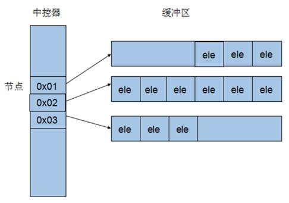
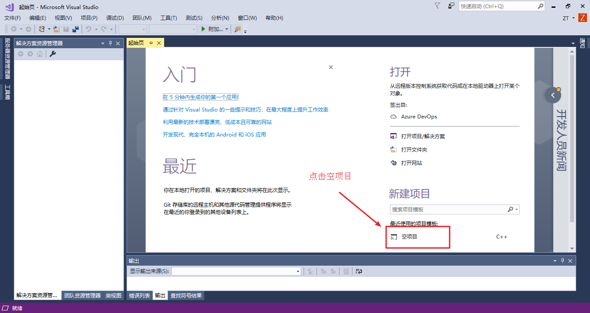
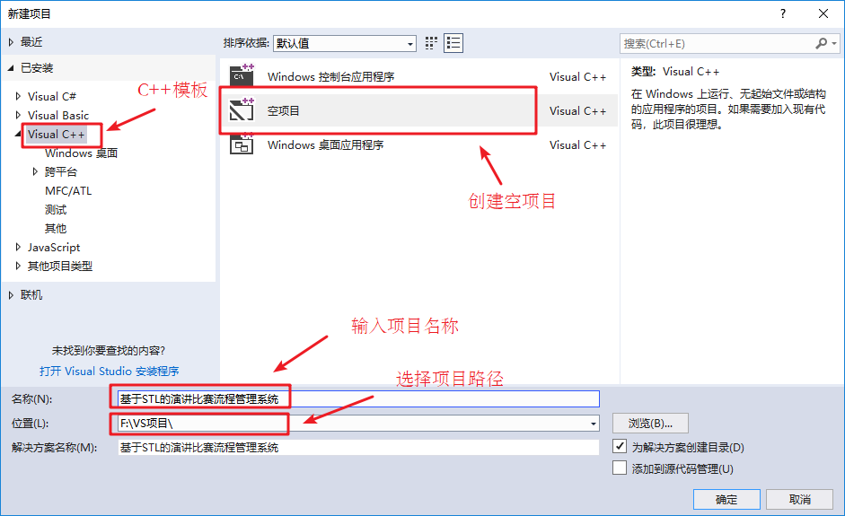
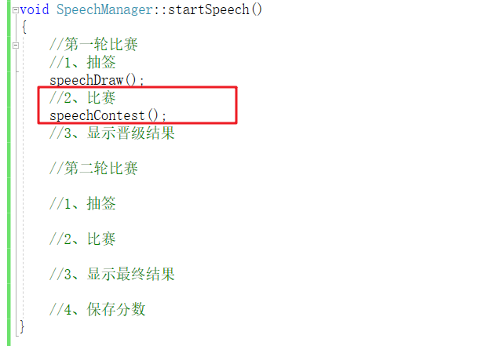
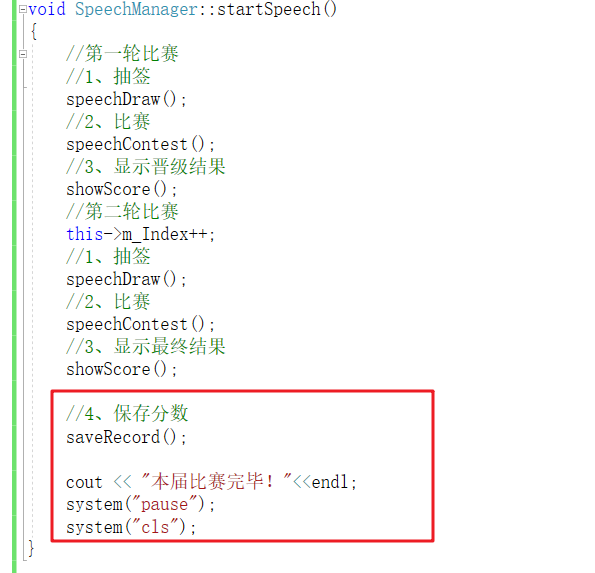
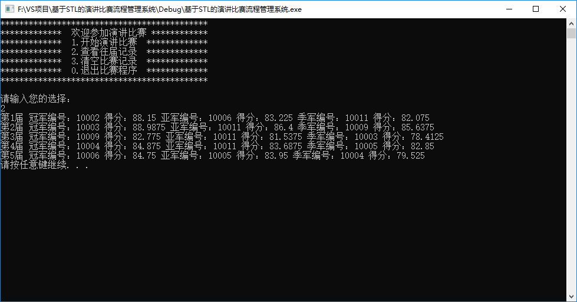
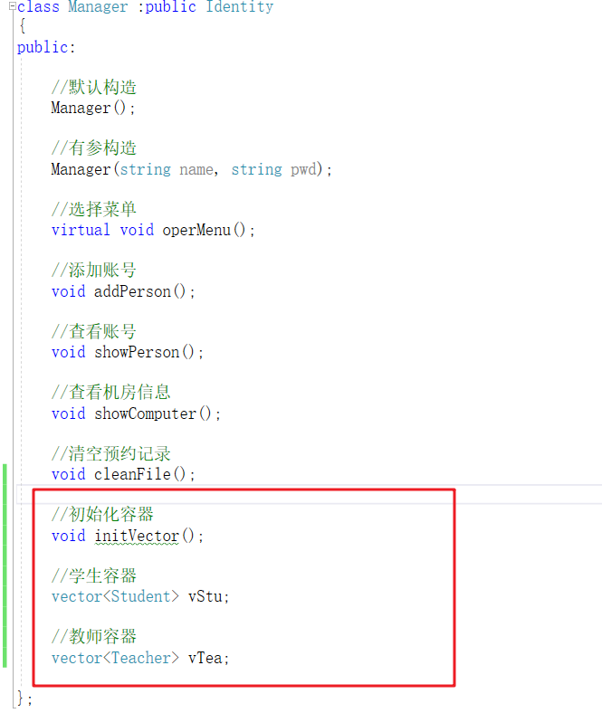
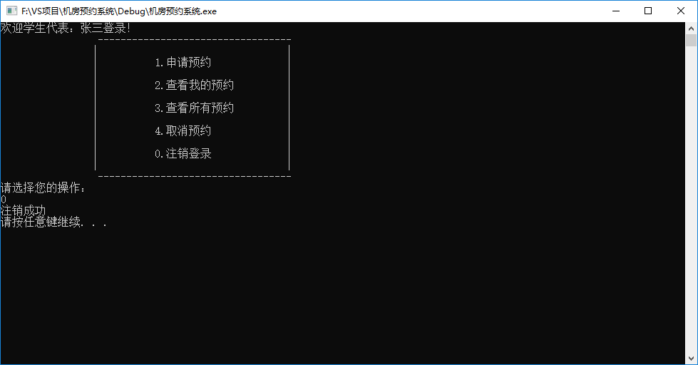
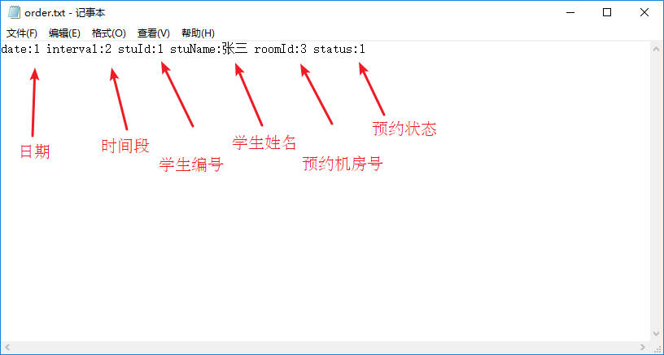

C++提高编程
本阶段主要针对C++泛型编程 和STL 技术做详细讲解，探讨C++更深层的使用
1 模板 1.1 模板的概念 模板就是建立通用的模具 ，大大提高复用性
例如生活中的模板
一寸照片模板：
PPT模板：
模板的特点：
模板不可以直接使用，它只是一个框架
模板的通用并不是万能的
1.2 函数模板
C++另一种编程思想称为 泛型编程 ，主要利用的技术就是模板
1.2.1 函数模板语法 函数模板作用：
建立一个通用函数，其函数返回值类型和形参类型可以不具体制定，用一个虚拟的类型 来代表。
语法：
1 2 template <typename T>函数声明或定义
解释：
template —- 声明创建模板
typename —- 表面其后面的符号是一种数据类型，可以用class代替
T —- 通用的数据类型，名称可以替换，通常为大写字母
示例：
1 2 3 4 5 6 7 8 9 10 11 12 13 14 15 16 17 18 19 20 21 22 23 24 25 26 27 28 29 30 31 32 33 34 35 36 37 38 39 40 41 42 43 44 45 46 47 48 49 50 51 void swapInt (int & a, int & b) int temp = a; a = b; b = temp; } void swapDouble (double & a, double & b) double temp = a; a = b; b = temp; } template <typename T>void mySwap (T& a, T& b) T temp = a; a = b; b = temp; } void test01 () int a = 10 ; int b = 20 ; mySwap (a, b); mySwap <int >(a, b); cout << "a = " << a << endl; cout << "b = " << b << endl; } int main () test01 (); system ("pause" ); return 0 ; }
总结：
函数模板利用关键字 template
使用函数模板有两种方式：自动类型推导、显示指定类型
模板的目的是为了提高复用性，将类型参数化
1.2.2 函数模板注意事项 注意事项：
自动类型推导，必须推导出一致的数据类型T,才可以使用
示例：
1 2 3 4 5 6 7 8 9 10 11 12 13 14 15 16 17 18 19 20 21 22 23 24 25 26 27 28 29 30 31 32 33 34 35 36 37 38 39 40 41 42 43 44 template <class T>void mySwap (T& a, T& b) T temp = a; a = b; b = temp; } void test01 () int a = 10 ; int b = 20 ; char c = 'c' ; mySwap (a, b); } template <class T>void func () cout << "func 调用" << endl; } void test02 () func <int >(); } int main () test01 (); test02 (); system ("pause" ); return 0 ; }
总结：
使用模板时必须确定出通用数据类型T，并且能够推导出一致的类型
1.2.3 函数模板案例 案例描述：
利用函数模板封装一个排序的函数，可以对不同数据类型数组 进行排序
排序规则从大到小，排序算法为选择排序
分别利用char数组 和int数组 进行测试
示例：
1 2 3 4 5 6 7 8 9 10 11 12 13 14 15 16 17 18 19 20 21 22 23 24 25 26 27 28 29 30 31 32 33 34 35 36 37 38 39 40 41 42 43 44 45 46 47 48 49 50 51 52 53 54 55 56 57 58 59 60 61 62 63 64 65 template <typename T>void mySwap (T &a, T&b) T temp = a; a = b; b = temp; } template <class T > void mySort (T arr[], int len) for (int i = 0 ; i < len; i++) { int max = i; for (int j = i + 1 ; j < len; j++) { if (arr[max] < arr[j]) { max = j; } } if (max != i) { mySwap (arr[max], arr[i]); } } } template <typename T>void printArray (T arr[], int len) for (int i = 0 ; i < len; i++) { cout << arr[i] << " " ; } cout << endl; } void test01 () char charArr[] = "bdcfeagh" ; int num = sizeof (charArr) / sizeof (char ); mySort (charArr, num); printArray (charArr, num); } void test02 () int intArr[] = { 7 , 5 , 8 , 1 , 3 , 9 , 2 , 4 , 6 }; int num = sizeof (intArr) / sizeof (int ); mySort (intArr, num); printArray (intArr, num); } int main () test01 (); test02 (); system ("pause" ); return 0 ; }
总结：模板可以提高代码复用，需要熟练掌握
1.2.4 普通函数与函数模板的区别 普通函数与函数模板区别：
普通函数调用时可以发生自动类型转换（隐式类型转换）
函数模板调用时，如果利用自动类型推导，不会发生隐式类型转换
如果利用显示指定类型的方式，可以发生隐式类型转换
示例：
1 2 3 4 5 6 7 8 9 10 11 12 13 14 15 16 17 18 19 20 21 22 23 24 25 26 27 28 29 30 31 32 33 34 35 int myAdd01 (int a, int b) return a + b; } template <class T>T myAdd02 (T a, T b) return a + b; } void test01 () int a = 10 ; int b = 20 ; char c = 'c' ; cout << myAdd01 (a, c) << endl; myAdd02 <int >(a, c); } int main () test01 (); system ("pause" ); return 0 ; }
总结：建议使用显示指定类型的方式，调用函数模板，因为可以自己确定通用类型T
1.2.5 普通函数与函数模板的调用规则 调用规则如下：
如果函数模板和普通函数都可以实现，优先调用普通函数
可以通过空模板参数列表来强制调用函数模板
函数模板也可以发生重载
如果函数模板可以产生更好的匹配,优先调用函数模板
示例：
1 2 3 4 5 6 7 8 9 10 11 12 13 14 15 16 17 18 19 20 21 22 23 24 25 26 27 28 29 30 31 32 33 34 35 36 37 38 39 40 41 42 43 44 45 46 47 void myPrint (int a, int b) cout << "调用的普通函数" << endl; } template <typename T>void myPrint (T a, T b) cout << "调用的模板" << endl; } template <typename T>void myPrint (T a, T b, T c) cout << "调用重载的模板" << endl; } void test01 () int a = 10 ; int b = 20 ; myPrint (a, b); myPrint<>(a, b); int c = 30 ; myPrint (a, b, c); char c1 = 'a' ; char c2 = 'b' ; myPrint (c1, c2); } int main () test01 (); system ("pause" ); return 0 ; }
总结：既然提供了函数模板，最好就不要提供普通函数，否则容易出现二义性
1.2.6 模板的局限性 局限性：
例如：
1 2 3 4 5 template <class T>void f (T a, T b) a = b; }
在上述代码中提供的赋值操作，如果传入的a和b是一个数组，就无法实现了
再例如：
1 2 3 4 5 template <class T>void f (T a, T b) if (a > b) { ... } }
在上述代码中，如果T的数据类型传入的是像Person这样的自定义数据类型，也无法正常运行
因此C++为了解决这种问题，提供模板的重载，可以为这些特定的类型 提供具体化的模板
示例：
1 2 3 4 5 6 7 8 9 10 11 12 13 14 15 16 17 18 19 20 21 22 23 24 25 26 27 28 29 30 31 32 33 34 35 36 37 38 39 40 41 42 43 44 45 46 47 48 49 50 51 52 53 54 55 56 57 58 59 60 61 62 63 64 65 66 67 68 69 70 71 72 73 74 75 76 77 78 79 80 81 82 83 84 85 86 87 88 89 #include <iostream> using namespace std;#include <string> class Person { public : Person (string name, int age) { this ->m_Name = name; this ->m_Age = age; } string m_Name; int m_Age; }; template <class T>bool myCompare (T& a, T& b) if (a == b) { return true ; } else { return false ; } } template <> bool myCompare (Person &p1, Person &p2) if ( p1.m_Name == p2.m_Name && p1.m_Age == p2.m_Age) { return true ; } else { return false ; } } void test01 () int a = 10 ; int b = 20 ; bool ret = myCompare (a, b); if (ret) { cout << "a == b " << endl; } else { cout << "a != b " << endl; } } void test02 () Person p1 ("Tom" , 10 ) ; Person p2 ("Tom" , 10 ) ; bool ret = myCompare (p1, p2); if (ret) { cout << "p1 == p2 " << endl; } else { cout << "p1 != p2 " << endl; } } int main () test01 (); test02 (); system ("pause" ); return 0 ; }
总结：
利用具体化的模板，可以解决自定义类型的通用化
学习模板并不是为了写模板，而是在STL能够运用系统提供的模板
1.3 类模板 1.3.1 类模板语法 类模板作用：
建立一个通用类，类中的成员 数据类型可以不具体制定，用一个虚拟的类型 来代表。
语法：
解释：
template —- 声明创建模板
typename —- 表面其后面的符号是一种数据类型，可以用class代替
T —- 通用的数据类型，名称可以替换，通常为大写字母
示例：
1 2 3 4 5 6 7 8 9 10 11 12 13 14 15 16 17 18 19 20 21 22 23 24 25 26 27 28 29 30 31 32 33 34 35 #include <string> template <class NameType , class AgeType > class Person { public : Person (NameType name, AgeType age) { this ->mName = name; this ->mAge = age; } void showPerson () { cout << "name: " << this ->mName << " age: " << this ->mAge << endl; } public : NameType mName; AgeType mAge; }; void test01 () Person<string, int >P1 ("孙悟空" , 999 ); P1.showPerson (); } int main () test01 (); system ("pause" ); return 0 ; }
总结：类模板和函数模板语法相似，在声明模板template后面加类，此类称为类模板
1.3.2 类模板与函数模板区别 类模板与函数模板区别主要有两点：
类模板没有自动类型推导的使用方式
类模板在模板参数列表中可以有默认参数
示例：
1 2 3 4 5 6 7 8 9 10 11 12 13 14 15 16 17 18 19 20 21 22 23 24 25 26 27 28 29 30 31 32 33 34 35 36 37 38 39 40 41 42 43 44 45 #include <string> template <class NameType , class AgeType = int > class Person{ public : Person (NameType name, AgeType age) { this ->mName = name; this ->mAge = age; } void showPerson () { cout << "name: " << this ->mName << " age: " << this ->mAge << endl; } public : NameType mName; AgeType mAge; }; void test01 () Person <string ,int >p ("孙悟空" , 1000 ); p.showPerson (); } void test02 () Person <string> p ("猪八戒" , 999 ); p.showPerson (); } int main () test01 (); test02 (); system ("pause" ); return 0 ; }
总结：
类模板使用只能用显示指定类型方式
类模板中的模板参数列表可以有默认参数
1.3.3 类模板中成员函数创建时机 类模板中成员函数和普通类中成员函数创建时机是有区别的：
普通类中的成员函数一开始就可以创建
类模板中的成员函数在调用时才创建
示例：
1 2 3 4 5 6 7 8 9 10 11 12 13 14 15 16 17 18 19 20 21 22 23 24 25 26 27 28 29 30 31 32 33 34 35 36 37 38 39 40 41 42 43 44 45 46 47 48 class Person1 { public : void showPerson1 () { cout << "Person1 show" << endl; } }; class Person2 { public : void showPerson2 () { cout << "Person2 show" << endl; } }; template <class T >class MyClass { public : T obj; void fun1 () showPerson1 (); } void fun2 () showPerson2 (); } }; void test01 () MyClass<Person1> m; m.fun1 (); } int main () test01 (); system ("pause" ); return 0 ; }
总结：类模板中的成员函数并不是一开始就创建的，在调用时才去创建
1.3.4 类模板对象做函数参数 学习目标：
一共有三种传入方式：
指定传入的类型 —- 直接显示对象的数据类型
参数模板化 —- 将对象中的参数变为模板进行传递
整个类模板化 —- 将这个对象类型 模板化进行传递
示例：
1 2 3 4 5 6 7 8 9 10 11 12 13 14 15 16 17 18 19 20 21 22 23 24 25 26 27 28 29 30 31 32 33 34 35 36 37 38 39 40 41 42 43 44 45 46 47 48 49 50 51 52 53 54 55 56 57 58 59 60 61 62 63 64 65 66 67 68 69 #include <string> template <class NameType , class AgeType = int > class Person{ public : Person (NameType name, AgeType age) { this ->mName = name; this ->mAge = age; } void showPerson () { cout << "name: " << this ->mName << " age: " << this ->mAge << endl; } public : NameType mName; AgeType mAge; }; void printPerson1 (Person<string, int > &p) p.showPerson (); } void test01 () Person <string, int >p ("孙悟空" , 100 ); printPerson1 (p); } template <class T1 , class T2 >void printPerson2 (Person<T1, T2>&p) p.showPerson (); cout << "T1的类型为： " << typeid (T1).name () << endl; cout << "T2的类型为： " << typeid (T2).name () << endl; } void test02 () Person <string, int >p ("猪八戒" , 90 ); printPerson2 (p); } template <class T>void printPerson3 (T & p) cout << "T的类型为： " << typeid (T).name () << endl; p.showPerson (); } void test03 () Person <string, int >p ("唐僧" , 30 ); printPerson3 (p); } int main () test01 (); test02 (); test03 (); system ("pause" ); return 0 ; }
总结：
通过类模板创建的对象，可以有三种方式向函数中进行传参
使用比较广泛是第一种：指定传入的类型
1.3.5 类模板与继承 当类模板碰到继承时，需要注意一下几点：
当子类继承的父类是一个类模板时，子类在声明的时候，要指定出父类中T的类型
如果不指定，编译器无法给子类分配内存
如果想灵活指定出父类中T的类型，子类也需变为类模板
示例：
1 2 3 4 5 6 7 8 9 10 11 12 13 14 15 16 17 18 19 20 21 22 23 24 25 26 27 28 29 30 31 32 33 34 35 36 37 38 39 40 41 42 43 template <class T >class Base { T m; }; class Son :public Base<int > { }; void test01 () Son c; } template <class T1 , class T2 >class Son2 :public Base<T2>{ public : Son2 () { cout << typeid (T1).name () << endl; cout << typeid (T2).name () << endl; } }; void test02 () Son2<int , char > child1; } int main () test01 (); test02 (); system ("pause" ); return 0 ; }
总结：如果父类是类模板，子类需要指定出父类中T的数据类型
1.3.6 类模板成员函数类外实现 学习目标：能够掌握类模板中的成员函数类外实现
示例：
1 2 3 4 5 6 7 8 9 10 11 12 13 14 15 16 17 18 19 20 21 22 23 24 25 26 27 28 29 30 31 32 33 34 35 36 37 38 39 40 41 42 #include <string> template <class T1 , class T2 >class Person {public : Person (T1 name, T2 age); void showPerson () public : T1 m_Name; T2 m_Age; }; template <class T1 , class T2 >Person<T1, T2>::Person (T1 name, T2 age) { this ->m_Name = name; this ->m_Age = age; } template <class T1 , class T2 >void Person<T1, T2>::showPerson () { cout << "姓名: " << this ->m_Name << " 年龄:" << this ->m_Age << endl; } void test01 () Person<string, int > p ("Tom" , 20 ) ; p.showPerson (); } int main () test01 (); system ("pause" ); return 0 ; }
总结：类模板中成员函数类外实现时，需要加上模板参数列表
1.3.7 类模板分文件编写 学习目标：
掌握类模板成员函数分文件编写产生的问题以及解决方式
问题：
类模板中成员函数创建时机是在调用阶段，导致分文件编写时链接不到
解决：
解决方式1：直接包含.cpp源文件
解决方式2：将声明和实现写到同一个文件中，并更改后缀名为.hpp，hpp是约定的名称，并不是强制
示例：
person.hpp中代码：
1 2 3 4 5 6 7 8 9 10 11 12 13 14 15 16 17 18 19 20 21 22 23 24 25 26 27 #pragma once #include <iostream> using namespace std;#include <string> template <class T1 , class T2 >class Person {public : Person (T1 name, T2 age); void showPerson () public : T1 m_Name; T2 m_Age; }; template <class T1 , class T2 >Person<T1, T2>::Person (T1 name, T2 age) { this ->m_Name = name; this ->m_Age = age; } template <class T1 , class T2 >void Person<T1, T2>::showPerson () { cout << "姓名: " << this ->m_Name << " 年龄:" << this ->m_Age << endl; }
类模板分文件编写.cpp中代码
1 2 3 4 5 6 7 8 9 10 11 12 13 14 15 16 17 18 19 20 21 22 #include <iostream> using namespace std;#include "person.cpp" #include "person.hpp" void test01 () Person<string, int > p ("Tom" , 10 ) ; p.showPerson (); } int main () test01 (); system ("pause" ); return 0 ; }
总结：主流的解决方式是第二种，将类模板成员函数写到一起，并将后缀名改为.hpp
1.3.8 类模板与友元 学习目标：
全局函数类内实现 - 直接在类内声明友元即可
全局函数类外实现 - 需要提前让编译器知道全局函数的存在
示例：
1 2 3 4 5 6 7 8 9 10 11 12 13 14 15 16 17 18 19 20 21 22 23 24 25 26 27 28 29 30 31 32 33 34 35 36 37 38 39 40 41 42 43 44 45 46 47 48 49 50 51 52 53 54 55 56 57 58 59 60 61 62 63 64 65 66 67 #include <string> template <class T1 , class T2 > class Person ;template <class T1, class T2>void printPerson2 (Person<T1, T2> & p) cout << "类外实现 ---- 姓名： " << p.m_Name << " 年龄：" << p.m_Age << endl; } template <class T1 , class T2 >class Person { friend void printPerson (Person<T1, T2> & p) { cout << "姓名： " << p.m_Name << " 年龄：" << p.m_Age << endl; } friend void printPerson2<>(Person<T1, T2> & p); public : Person (T1 name, T2 age) { this ->m_Name = name; this ->m_Age = age; } private : T1 m_Name; T2 m_Age; }; void test01 () Person <string, int >p ("Tom" , 20 ); printPerson (p); } void test02 () Person <string, int >p ("Jerry" , 30 ); printPerson2 (p); } int main () test02 (); system ("pause" ); return 0 ; }
总结：建议全局函数做类内实现，用法简单，而且编译器可以直接识别
1.3.9 类模板案例 案例描述: 实现一个通用的数组类，要求如下：
可以对内置数据类型以及自定义数据类型的数据进行存储
将数组中的数据存储到堆区
构造函数中可以传入数组的容量
提供对应的拷贝构造函数以及operator=防止浅拷贝问题
提供尾插法和尾删法对数组中的数据进行增加和删除
可以通过下标的方式访问数组中的元素
可以获取数组中当前元素个数和数组的容量
示例：
myArray.hpp中代码
1 2 3 4 5 6 7 8 9 10 11 12 13 14 15 16 17 18 19 20 21 22 23 24 25 26 27 28 29 30 31 32 33 34 35 36 37 38 39 40 41 42 43 44 45 46 47 48 49 50 51 52 53 54 55 56 57 58 59 60 61 62 63 64 65 66 67 68 69 70 71 72 73 74 75 76 77 78 79 80 81 82 83 84 85 86 87 88 89 90 91 92 93 94 95 96 97 98 99 100 101 102 103 104 105 106 #pragma once #include <iostream> using namespace std;template <class T >class MyArray { public : MyArray (int capacity) { this ->m_Capacity = capacity; this ->m_Size = 0 ; pAddress = new T[this ->m_Capacity]; } MyArray (const MyArray & arr) { this ->m_Capacity = arr.m_Capacity; this ->m_Size = arr.m_Size; this ->pAddress = new T[this ->m_Capacity]; for (int i = 0 ; i < this ->m_Size; i++) { this ->pAddress[i] = arr.pAddress[i]; } } MyArray& operator =(const MyArray& myarray) { if (this ->pAddress != NULL ) { delete [] this ->pAddress; this ->m_Capacity = 0 ; this ->m_Size = 0 ; } this ->m_Capacity = myarray.m_Capacity; this ->m_Size = myarray.m_Size; this ->pAddress = new T[this ->m_Capacity]; for (int i = 0 ; i < this ->m_Size; i++) { this ->pAddress[i] = myarray[i]; } return *this ; } T& operator [](int index) { return this ->pAddress[index]; } void Push_back (const T & val) { if (this ->m_Capacity == this ->m_Size) { return ; } this ->pAddress[this ->m_Size] = val; this ->m_Size++; } void Pop_back () { if (this ->m_Size == 0 ) { return ; } this ->m_Size--; } int getCapacity () { return this ->m_Capacity; } int getSize () { return this ->m_Size; } ~MyArray () { if (this ->pAddress != NULL ) { delete [] this ->pAddress; this ->pAddress = NULL ; this ->m_Capacity = 0 ; this ->m_Size = 0 ; } } private : T * pAddress; int m_Capacity; int m_Size; };
类模板案例—数组类封装.cpp中
1 2 3 4 5 6 7 8 9 10 11 12 13 14 15 16 17 18 19 20 21 22 23 24 25 26 27 28 29 30 31 32 33 34 35 36 37 38 39 40 41 42 43 44 45 46 47 48 49 50 51 52 53 54 55 56 57 58 59 60 61 62 63 64 65 66 67 68 69 70 71 72 73 74 75 76 77 78 79 80 81 82 83 84 85 86 87 88 #include "myArray.hpp" #include <string> void printIntArray (MyArray<int >& arr) for (int i = 0 ; i < arr.getSize (); i++) { cout << arr[i] << " " ; } cout << endl; } void test01 () MyArray<int > array1 (10 ) ; for (int i = 0 ; i < 10 ; i++) { array1.Push_back (i); } cout << "array1打印输出：" << endl; printIntArray (array1); cout << "array1的大小：" << array1.getSize () << endl; cout << "array1的容量：" << array1.getCapacity () << endl; cout << "--------------------------" << endl; MyArray<int > array2 (array1) ; array2.Pop_back (); cout << "array2打印输出：" << endl; printIntArray (array2); cout << "array2的大小：" << array2.getSize () << endl; cout << "array2的容量：" << array2.getCapacity () << endl; } class Person {public : Person () {} Person (string name, int age) { this ->m_Name = name; this ->m_Age = age; } public : string m_Name; int m_Age; }; void printPersonArray (MyArray<Person>& personArr) for (int i = 0 ; i < personArr.getSize (); i++) { cout << "姓名：" << personArr[i].m_Name << " 年龄： " << personArr[i].m_Age << endl; } } void test02 () MyArray<Person> pArray (10 ) ; Person p1 ("孙悟空" , 30 ) ; Person p2 ("韩信" , 20 ) ; Person p3 ("妲己" , 18 ) ; Person p4 ("王昭君" , 15 ) ; Person p5 ("赵云" , 24 ) ; pArray.Push_back (p1); pArray.Push_back (p2); pArray.Push_back (p3); pArray.Push_back (p4); pArray.Push_back (p5); printPersonArray (pArray); cout << "pArray的大小：" << pArray.getSize () << endl; cout << "pArray的容量：" << pArray.getCapacity () << endl; } int main () test02 (); system ("pause" ); return 0 ; }
总结：
能够利用所学知识点实现通用的数组
2 STL初识 2.1 STL的诞生
2.2 STL基本概念
STL(Standard Template Library,标准模板库 )
STL 从广义上分为: 容器(container) 算法(algorithm) 迭代器(iterator)
容器 和算法 之间通过迭代器 进行无缝连接。STL 几乎所有的代码都采用了模板类或者模板函数
2.3 STL六大组件 STL大体分为六大组件，分别是:容器、算法、迭代器、仿函数、适配器（配接器）、空间配置器
容器：各种数据结构，如vector、list、deque、set、map等,用来存放数据。
算法：各种常用的算法，如sort、find、copy、for_each等
迭代器：扮演了容器与算法之间的胶合剂。
仿函数：行为类似函数，可作为算法的某种策略。
适配器：一种用来修饰容器或者仿函数或迭代器接口的东西。
空间配置器：负责空间的配置与管理。
2.4 STL中容器、算法、迭代器 容器： 置物之所也
STL容器 就是将运用最广泛的一些数据结构 实现出来
常用的数据结构：数组, 链表,树, 栈, 队列, 集合, 映射表 等
这些容器分为序列式容器 和关联式容器 两种:
序列式容器 :强调值的排序，序列式容器中的每个元素均有固定的位置。关联式容器 :二叉树结构，各元素之间没有严格的物理上的顺序关系
算法： 问题之解法也
有限的步骤，解决逻辑或数学上的问题，这一门学科我们叫做算法(Algorithms)
算法分为:质变算法 和非质变算法 。
质变算法：是指运算过程中会更改区间内的元素的内容。例如拷贝，替换，删除等等
非质变算法：是指运算过程中不会更改区间内的元素内容，例如查找、计数、遍历、寻找极值等等
迭代器： 容器和算法之间粘合剂
提供一种方法，使之能够依序寻访某个容器所含的各个元素，而又无需暴露该容器的内部表示方式。
每个容器都有自己专属的迭代器
迭代器使用非常类似于指针，初学阶段我们可以先理解迭代器为指针
迭代器种类：
种类
功能
支持运算
输入迭代器
对数据的只读访问
只读，支持++、==、！=
输出迭代器
对数据的只写访问
只写，支持++
前向迭代器
读写操作，并能向前推进迭代器
读写，支持++、==、！=
双向迭代器
读写操作，并能向前和向后操作
读写，支持++、—，
随机访问迭代器
读写操作，可以以跳跃的方式访问任意数据，功能最强的迭代器
读写，支持++、—、[n]、-n、<、<=、>、>=
常用的容器中迭代器种类为双向迭代器，和随机访问迭代器
2.5 容器算法迭代器初识 了解STL中容器、算法、迭代器概念之后，我们利用代码感受STL的魅力
STL中最常用的容器为Vector，可以理解为数组，下面我们将学习如何向这个容器中插入数据、并遍历这个容器
2.5.1 vector存放内置数据类型 容器： vector
算法： for_each
迭代器： vector<int>::iterator
示例：
1 2 3 4 5 6 7 8 9 10 11 12 13 14 15 16 17 18 19 20 21 22 23 24 25 26 27 28 29 30 31 32 33 34 35 36 37 38 39 40 41 42 43 44 45 46 47 48 49 50 51 52 #include <vector> #include <algorithm> void MyPrint (int val) cout << val << endl; } void test01 () vector<int > v; v.push_back (10 ); v.push_back (20 ); v.push_back (30 ); v.push_back (40 ); vector<int >::iterator pBegin = v.begin (); vector<int >::iterator pEnd = v.end (); while (pBegin != pEnd) { cout << *pBegin << endl; pBegin++; } for (vector<int >::iterator it = v.begin (); it != v.end (); it++) { cout << *it << endl; } cout << endl; for_each(v.begin (), v.end (), MyPrint); } int main () test01 (); system ("pause" ); return 0 ; }
2.5.2 Vector存放自定义数据类型 学习目标：vector中存放自定义数据类型，并打印输出
示例：
1 2 3 4 5 6 7 8 9 10 11 12 13 14 15 16 17 18 19 20 21 22 23 24 25 26 27 28 29 30 31 32 33 34 35 36 37 38 39 40 41 42 43 44 45 46 47 48 49 50 51 52 53 54 55 56 57 58 59 60 61 62 63 64 65 66 67 68 69 70 71 72 73 74 #include <vector> #include <string> class Person {public : Person (string name, int age) { mName = name; mAge = age; } public : string mName; int mAge; }; void test01 () vector<Person> v; Person p1 ("aaa" , 10 ) ; Person p2 ("bbb" , 20 ) ; Person p3 ("ccc" , 30 ) ; Person p4 ("ddd" , 40 ) ; Person p5 ("eee" , 50 ) ; v.push_back (p1); v.push_back (p2); v.push_back (p3); v.push_back (p4); v.push_back (p5); for (vector<Person>::iterator it = v.begin (); it != v.end (); it++) { cout << "Name:" << (*it).mName << " Age:" << (*it).mAge << endl; } } void test02 () vector<Person*> v; Person p1 ("aaa" , 10 ) ; Person p2 ("bbb" , 20 ) ; Person p3 ("ccc" , 30 ) ; Person p4 ("ddd" , 40 ) ; Person p5 ("eee" , 50 ) ; v.push_back (&p1); v.push_back (&p2); v.push_back (&p3); v.push_back (&p4); v.push_back (&p5); for (vector<Person*>::iterator it = v.begin (); it != v.end (); it++) { Person * p = (*it); cout << "Name:" << p->mName << " Age:" << (*it)->mAge << endl; } } int main () test01 (); test02 (); system ("pause" ); return 0 ; }
2.5.3 Vector容器嵌套容器 学习目标：容器中嵌套容器，我们将所有数据进行遍历输出
示例：
1 2 3 4 5 6 7 8 9 10 11 12 13 14 15 16 17 18 19 20 21 22 23 24 25 26 27 28 29 30 31 32 33 34 35 36 37 38 39 40 41 42 43 44 #include <vector> void test01 () vector< vector<int > > v; vector<int > v1; vector<int > v2; vector<int > v3; vector<int > v4; for (int i = 0 ; i < 4 ; i++) { v1.push_back (i + 1 ); v2.push_back (i + 2 ); v3.push_back (i + 3 ); v4.push_back (i + 4 ); } v.push_back (v1); v.push_back (v2); v.push_back (v3); v.push_back (v4); for (vector<vector<int >>::iterator it = v.begin (); it != v.end (); it++) { for (vector<int >::iterator vit = (*it).begin (); vit != (*it).end (); vit++) { cout << *vit << " " ; } cout << endl; } } int main () test01 (); system ("pause" ); return 0 ; }
3 STL- 常用容器 3.1 string容器 3.1.1 string基本概念 本质：
string是C++风格的字符串，而string本质上是一个类
string和char * 区别：
char * 是一个指针
string是一个类，类内部封装了char*，管理这个字符串，是一个char*型的容器。
特点：
string 类内部封装了很多成员方法
例如：查找find，拷贝copy，删除delete 替换replace，插入insert
string管理char*所分配的内存，不用担心复制越界和取值越界等，由类内部进行负责
3.1.2 string构造函数 构造函数原型：
string(); //创建一个空的字符串 例如: string str;string(const char* s); //使用字符串s初始化string(const string& str); //使用一个string对象初始化另一个string对象string(int n, char c); //使用n个字符c初始化
示例：
1 2 3 4 5 6 7 8 9 10 11 12 13 14 15 16 17 18 19 20 21 22 23 24 25 26 27 #include <string> void test01 () string s1; cout << "str1 = " << s1 << endl; const char * str = "hello world" ; string s2 (str) ; cout << "str2 = " << s2 << endl; string s3 (s2) ; cout << "str3 = " << s3 << endl; string s4 (10 , 'a' ) ; cout << "str3 = " << s3 << endl; } int main () test01 (); system ("pause" ); return 0 ; }
总结：string的多种构造方式没有可比性，灵活使用即可
3.1.3 string赋值操作 功能描述：
赋值的函数原型：
string& operator=(const char* s); //char*类型字符串 赋值给当前的字符串string& operator=(const string &s); //把字符串s赋给当前的字符串string& operator=(char c); //字符赋值给当前的字符串string& assign(const char *s); //把字符串s赋给当前的字符串string& assign(const char *s, int n); //把字符串s的前n个字符赋给当前的字符串string& assign(const string &s); //把字符串s赋给当前字符串string& assign(int n, char c); //用n个字符c赋给当前字符串
示例：
1 2 3 4 5 6 7 8 9 10 11 12 13 14 15 16 17 18 19 20 21 22 23 24 25 26 27 28 29 30 31 32 33 34 35 36 37 38 39 40 41 void test01 () string str1; str1 = "hello world" ; cout << "str1 = " << str1 << endl; string str2; str2 = str1; cout << "str2 = " << str2 << endl; string str3; str3 = 'a' ; cout << "str3 = " << str3 << endl; string str4; str4.assign ("hello c++" ); cout << "str4 = " << str4 << endl; string str5; str5.assign ("hello c++" ,5 ); cout << "str5 = " << str5 << endl; string str6; str6.assign (str5); cout << "str6 = " << str6 << endl; string str7; str7.assign (5 , 'x' ); cout << "str7 = " << str7 << endl; } int main () test01 (); system ("pause" ); return 0 ; }
总结：
string的赋值方式很多，operator= 这种方式是比较实用的
3.1.4 string字符串拼接 功能描述：
函数原型：
string& operator+=(const char* str); //重载+=操作符string& operator+=(const char c); //重载+=操作符string& operator+=(const string& str); //重载+=操作符string& append(const char *s); //把字符串s连接到当前字符串结尾string& append(const char *s, int n); //把字符串s的前n个字符连接到当前字符串结尾string& append(const string &s); //同operator+=(const string& str)string& append(const string &s, int pos, int n);//字符串s中从pos开始的n个字符连接到字符串结尾
示例：
1 2 3 4 5 6 7 8 9 10 11 12 13 14 15 16 17 18 19 20 21 22 23 24 25 26 27 28 29 30 31 32 33 34 void test01 () string str1 = "我" ; str1 += "爱玩游戏" ; cout << "str1 = " << str1 << endl; str1 += ':' ; cout << "str1 = " << str1 << endl; string str2 = "LOL DNF" ; str1 += str2; cout << "str1 = " << str1 << endl; string str3 = "I" ; str3.append (" love " ); str3.append ("game abcde" , 4 ); str3.append (str2, 4 , 3 ); cout << "str3 = " << str3 << endl; } int main () test01 (); system ("pause" ); return 0 ; }
总结：字符串拼接的重载版本很多，初学阶段记住几种即可
3.1.5 string查找和替换 功能描述：
查找：查找指定字符串是否存在
替换：在指定的位置替换字符串
函数原型：
int find(const string& str, int pos = 0) const; //查找str第一次出现位置,从pos开始查找int find(const char* s, int pos = 0) const; //查找s第一次出现位置,从pos开始查找int find(const char* s, int pos, int n) const; //从pos位置查找s的前n个字符第一次位置int find(const char c, int pos = 0) const; //查找字符c第一次出现位置int rfind(const string& str, int pos = npos) const; //查找str最后一次位置,从pos开始查找int rfind(const char* s, int pos = npos) const; //查找s最后一次出现位置,从pos开始查找int rfind(const char* s, int pos, int n) const; //从pos查找s的前n个字符最后一次位置int rfind(const char c, int pos = 0) const; //查找字符c最后一次出现位置string& replace(int pos, int n, const string& str); //替换从pos开始n个字符为字符串strstring& replace(int pos, int n,const char* s); //替换从pos开始的n个字符为字符串s
示例：
1 2 3 4 5 6 7 8 9 10 11 12 13 14 15 16 17 18 19 20 21 22 23 24 25 26 27 28 29 30 31 32 33 34 35 36 37 38 39 40 41 42 void test01 () string str1 = "abcdefgde" ; int pos = str1.find ("de" ); if (pos == -1 ) { cout << "未找到" << endl; } else { cout << "pos = " << pos << endl; } pos = str1.rfind ("de" ); cout << "pos = " << pos << endl; } void test02 () string str1 = "abcdefgde" ; str1.replace (1 , 3 , "1111" ); cout << "str1 = " << str1 << endl; } int main () system ("pause" ); return 0 ; }
总结：
find查找是从左往后，rfind从右往左
find找到字符串后返回查找的第一个字符位置，找不到返回-1
replace在替换时，要指定从哪个位置起，多少个字符，替换成什么样的字符串
3.1.6 string字符串比较 功能描述：
比较方式：
= 返回 0
> 返回 1
< 返回 -1
函数原型：
int compare(const string &s) const; //与字符串s比较int compare(const char *s) const; //与字符串s比较
示例：
1 2 3 4 5 6 7 8 9 10 11 12 13 14 15 16 17 18 19 20 21 22 23 24 25 26 27 28 29 30 31 void test01 () string s1 = "hello" ; string s2 = "aello" ; int ret = s1.compare (s2); if (ret == 0 ) { cout << "s1 等于 s2" << endl; } else if (ret > 0 ) { cout << "s1 大于 s2" << endl; } else { cout << "s1 小于 s2" << endl; } } int main () test01 (); system ("pause" ); return 0 ; }
总结：字符串对比主要是用于比较两个字符串是否相等，判断谁大谁小的意义并不是很大
3.1.7 string字符存取 string中单个字符存取方式有两种
char& operator[](int n); //通过[]方式取字符char& at(int n); //通过at方法获取字符
示例：
1 2 3 4 5 6 7 8 9 10 11 12 13 14 15 16 17 18 19 20 21 22 23 24 25 26 27 28 29 30 31 32 void test01 () string str = "hello world" ; for (int i = 0 ; i < str.size (); i++) { cout << str[i] << " " ; } cout << endl; for (int i = 0 ; i < str.size (); i++) { cout << str.at (i) << " " ; } cout << endl; str[0 ] = 'x' ; str.at (1 ) = 'x' ; cout << str << endl; } int main () test01 (); system ("pause" ); return 0 ; }
总结：string字符串中单个字符存取有两种方式，利用 [ ] 或 at
3.1.8 string插入和删除 功能描述：
函数原型：
string& insert(int pos, const char* s); //插入字符串string& insert(int pos, const string& str); //插入字符串string& insert(int pos, int n, char c); //在指定位置插入n个字符cstring& erase(int pos, int n = npos); //删除从Pos开始的n个字符
示例：
1 2 3 4 5 6 7 8 9 10 11 12 13 14 15 16 17 18 19 void test01 () string str = "hello" ; str.insert (1 , "111" ); cout << str << endl; str.erase (1 , 3 ); cout << str << endl; } int main () test01 (); system ("pause" ); return 0 ; }
总结： 插入和删除的起始下标都是从0开始
3.1.9 string子串 功能描述：
函数原型：
string substr(int pos = 0, int n = npos) const; //返回由pos开始的n个字符组成的字符串
示例：
1 2 3 4 5 6 7 8 9 10 11 12 13 14 15 16 17 18 19 20 21 22 23 void test01 () string str = "abcdefg" ; string subStr = str.substr (1 , 3 ); cout << "subStr = " << subStr << endl; string email = "hello@sina.com" ; int pos = email.find ("@" ); string username = email.substr (0 , pos); cout << "username: " << username << endl; } int main () test01 (); system ("pause" ); return 0 ; }
总结： 灵活的运用求子串功能，可以在实际开发中获取有效的信息
3.2 vector容器 3.2.1 vector基本概念 功能：
vector数据结构和数组非常相似 ，也称为单端数组
vector与普通数组区别：
不同之处在于数组是静态空间，而vector可以动态扩展
动态扩展：
并不是在原空间之后续接新空间，而是找更大的内存空间，然后将原数据拷贝新空间，释放原空间
3.2.2 vector构造函数 功能描述：
函数原型：
vector<T> v; //采用模板实现类实现，默认构造函数vector(v.begin(), v.end()); //将v[begin(), end())区间中的元素拷贝给本身。vector(n, elem); //构造函数将n个elem拷贝给本身。vector(const vector &vec); //拷贝构造函数。
示例：
1 2 3 4 5 6 7 8 9 10 11 12 13 14 15 16 17 18 19 20 21 22 23 24 25 26 27 28 29 30 31 32 33 34 35 36 37 #include <vector> void printVector (vector<int >& v) for (vector<int >::iterator it = v.begin (); it != v.end (); it++) { cout << *it << " " ; } cout << endl; } void test01 () vector<int > v1; for (int i = 0 ; i < 10 ; i++) { v1.push_back (i); } printVector (v1); vector<int > v2 (v1.begin(), v1.end()) ; printVector (v2); vector<int > v3 (10 , 100 ) ; printVector (v3); vector<int > v4 (v3) ; printVector (v4); } int main () test01 (); system ("pause" ); return 0 ; }
总结： vector的多种构造方式没有可比性，灵活使用即可
3.2.3 vector赋值操作 功能描述：
函数原型：
vector& operator=(const vector &vec);//重载等号操作符
assign(beg, end); //将[beg, end)区间中的数据拷贝赋值给本身。assign(n, elem); //将n个elem拷贝赋值给本身。
示例：
1 2 3 4 5 6 7 8 9 10 11 12 13 14 15 16 17 18 19 20 21 22 23 24 25 26 27 28 29 30 31 32 33 34 35 36 37 38 39 40 41 42 #include <vector> void printVector (vector<int >& v) for (vector<int >::iterator it = v.begin (); it != v.end (); it++) { cout << *it << " " ; } cout << endl; } void test01 () vector<int > v1; for (int i = 0 ; i < 10 ; i++) { v1.push_back (i); } printVector (v1); vector<int >v2; v2 = v1; printVector (v2); vector<int >v3; v3.assign (v1.begin (), v1.end ()); printVector (v3); vector<int >v4; v4.assign (10 , 100 ); printVector (v4); } int main () test01 (); system ("pause" ); return 0 ; }
总结： vector赋值方式比较简单，使用operator=，或者assign都可以
3.2.4 vector容量和大小 功能描述：
函数原型：
empty(); //判断容器是否为空
capacity(); //容器的容量
size(); //返回容器中元素的个数
resize(int num); //重新指定容器的长度为num，若容器变长，则以默认值填充新位置。
//如果容器变短，则末尾超出容器长度的元素被删除。
resize(int num, elem); //重新指定容器的长度为num，若容器变长，则以elem值填充新位置。
//如果容器变短，则末尾超出容器长度的元素被删除
示例：
1 2 3 4 5 6 7 8 9 10 11 12 13 14 15 16 17 18 19 20 21 22 23 24 25 26 27 28 29 30 31 32 33 34 35 36 37 38 39 40 41 42 43 44 45 46 47 #include <vector> void printVector (vector<int >& v) for (vector<int >::iterator it = v.begin (); it != v.end (); it++) { cout << *it << " " ; } cout << endl; } void test01 () vector<int > v1; for (int i = 0 ; i < 10 ; i++) { v1.push_back (i); } printVector (v1); if (v1.empty ()) { cout << "v1为空" << endl; } else { cout << "v1不为空" << endl; cout << "v1的容量 = " << v1.capacity () << endl; cout << "v1的大小 = " << v1.size () << endl; } v1.resize (15 ,10 ); printVector (v1); v1.resize (5 ); printVector (v1); } int main () test01 (); system ("pause" ); return 0 ; }
总结：
判断是否为空 —- empty
返回元素个数 —- size
返回容器容量 —- capacity
重新指定大小 —- resize
3.2.5 vector插入和删除 功能描述：
函数原型：
push_back(ele); //尾部插入元素elepop_back(); //删除最后一个元素insert(const_iterator pos, ele); //迭代器指向位置pos插入元素eleinsert(const_iterator pos, int count,ele);//迭代器指向位置pos插入count个元素eleerase(const_iterator pos); //删除迭代器指向的元素erase(const_iterator start, const_iterator end);//删除迭代器从start到end之间的元素clear(); //删除容器中所有元素
示例：
1 2 3 4 5 6 7 8 9 10 11 12 13 14 15 16 17 18 19 20 21 22 23 24 25 26 27 28 29 30 31 32 33 34 35 36 37 38 39 40 41 42 43 44 45 46 47 48 49 50 #include <vector> void printVector (vector<int >& v) for (vector<int >::iterator it = v.begin (); it != v.end (); it++) { cout << *it << " " ; } cout << endl; } void test01 () vector<int > v1; v1.push_back (10 ); v1.push_back (20 ); v1.push_back (30 ); v1.push_back (40 ); v1.push_back (50 ); printVector (v1); v1.pop_back (); printVector (v1); v1.insert (v1.begin (), 100 ); printVector (v1); v1.insert (v1.begin (), 2 , 1000 ); printVector (v1); v1.erase (v1.begin ()); printVector (v1); v1.erase (v1.begin (), v1.end ()); v1.clear (); printVector (v1); } int main () test01 (); system ("pause" ); return 0 ; }
总结：
尾插 —- push_back
尾删 —- pop_back
插入 —- insert (位置迭代器)
删除 —- erase （位置迭代器）
清空 —- clear
3.2.6 vector数据存取 功能描述：
函数原型：
at(int idx); //返回索引idx所指的数据operator[]; //返回索引idx所指的数据front(); //返回容器中第一个数据元素back(); //返回容器中最后一个数据元素
示例：
1 2 3 4 5 6 7 8 9 10 11 12 13 14 15 16 17 18 19 20 21 22 23 24 25 26 27 28 29 30 31 32 33 34 #include <vector> void test01 () vector<int >v1; for (int i = 0 ; i < 10 ; i++) { v1.push_back (i); } for (int i = 0 ; i < v1.size (); i++) { cout << v1[i] << " " ; } cout << endl; for (int i = 0 ; i < v1.size (); i++) { cout << v1.at (i) << " " ; } cout << endl; cout << "v1的第一个元素为： " << v1.front () << endl; cout << "v1的最后一个元素为： " << v1.back () << endl; } int main () test01 (); system ("pause" ); return 0 ; }
总结：
除了用迭代器获取vector容器中元素，[ ]和at也可以
front返回容器第一个元素
back返回容器最后一个元素
3.2.7 vector互换容器 功能描述：
函数原型：
swap(vec); // 将vec与本身的元素互换
示例：
1 2 3 4 5 6 7 8 9 10 11 12 13 14 15 16 17 18 19 20 21 22 23 24 25 26 27 28 29 30 31 32 33 34 35 36 37 38 39 40 41 42 43 44 45 46 47 48 49 50 51 52 53 54 55 56 57 58 59 60 61 62 63 64 65 66 #include <vector> void printVector (vector<int >& v) for (vector<int >::iterator it = v.begin (); it != v.end (); it++) { cout << *it << " " ; } cout << endl; } void test01 () vector<int >v1; for (int i = 0 ; i < 10 ; i++) { v1.push_back (i); } printVector (v1); vector<int >v2; for (int i = 10 ; i > 0 ; i--) { v2.push_back (i); } printVector (v2); cout << "互换后" << endl; v1.swap (v2); printVector (v1); printVector (v2); } void test02 () vector<int > v; for (int i = 0 ; i < 100000 ; i++) { v.push_back (i); } cout << "v的容量为：" << v.capacity () << endl; cout << "v的大小为：" << v.size () << endl; v.resize (3 ); cout << "v的容量为：" << v.capacity () << endl; cout << "v的大小为：" << v.size () << endl; vector <int >(v).swap (v); cout << "v的容量为：" << v.capacity () << endl; cout << "v的大小为：" << v.size () << endl; } int main () test01 (); test02 (); system ("pause" ); return 0 ; }
总结：swap可以使两个容器互换，可以达到实用的收缩内存效果
3.2.8 vector预留空间 功能描述：
函数原型：
示例：
1 2 3 4 5 6 7 8 9 10 11 12 13 14 15 16 17 18 19 20 21 22 23 24 25 26 27 28 29 30 #include <vector> void test01 () vector<int > v; v.reserve (100000 ); int num = 0 ; int * p = NULL ; for (int i = 0 ; i < 100000 ; i++) { v.push_back (i); if (p != &v[0 ]) { p = &v[0 ]; num++; } } cout << "num:" << num << endl; } int main () test01 (); system ("pause" ); return 0 ; }
总结：如果数据量较大，可以一开始利用reserve预留空间
3.3 deque容器 3.3.1 deque容器基本概念 功能：
deque与vector区别：
vector对于头部的插入删除效率低，数据量越大，效率越低
deque相对而言，对头部的插入删除速度回比vector快
vector访问元素时的速度会比deque快,这和两者内部实现有关
deque内部工作原理:
deque内部有个中控器 ，维护每段缓冲区中的内容，缓冲区中存放真实数据
中控器维护的是每个缓冲区的地址，使得使用deque时像一片连续的内存空间

3.3.2 deque构造函数 功能描述：
函数原型：
deque<T> deqT; //默认构造形式deque(beg, end); //构造函数将[beg, end)区间中的元素拷贝给本身。deque(n, elem); //构造函数将n个elem拷贝给本身。deque(const deque &deq); //拷贝构造函数
示例：
1 2 3 4 5 6 7 8 9 10 11 12 13 14 15 16 17 18 19 20 21 22 23 24 25 26 27 28 29 30 31 32 33 34 35 36 37 #include <deque> void printDeque (const deque<int >& d) for (deque<int >::const_iterator it = d.begin (); it != d.end (); it++) { cout << *it << " " ; } cout << endl; } void test01 () deque<int > d1; for (int i = 0 ; i < 10 ; i++) { d1.push_back (i); } printDeque (d1); deque<int > d2 (d1.begin(),d1.end()) ; printDeque (d2); deque<int >d3 (10 ,100 ); printDeque (d3); deque<int >d4 = d3; printDeque (d4); } int main () test01 (); system ("pause" ); return 0 ; }
总结： deque容器和vector容器的构造方式几乎一致，灵活使用即可
3.3.3 deque赋值操作 功能描述：
函数原型：
deque& operator=(const deque &deq); //重载等号操作符
assign(beg, end); //将[beg, end)区间中的数据拷贝赋值给本身。assign(n, elem); //将n个elem拷贝赋值给本身。
示例：
1 2 3 4 5 6 7 8 9 10 11 12 13 14 15 16 17 18 19 20 21 22 23 24 25 26 27 28 29 30 31 32 33 34 35 36 37 38 39 40 41 42 #include <deque> void printDeque (const deque<int >& d) for (deque<int >::const_iterator it = d.begin (); it != d.end (); it++) { cout << *it << " " ; } cout << endl; } void test01 () deque<int > d1; for (int i = 0 ; i < 10 ; i++) { d1.push_back (i); } printDeque (d1); deque<int >d2; d2 = d1; printDeque (d2); deque<int >d3; d3.assign (d1.begin (), d1.end ()); printDeque (d3); deque<int >d4; d4.assign (10 , 100 ); printDeque (d4); } int main () test01 (); system ("pause" ); return 0 ; }
总结：deque赋值操作也与vector相同，需熟练掌握
3.3.4 deque大小操作 功能描述：
函数原型：
deque.empty(); //判断容器是否为空
deque.size(); //返回容器中元素的个数
deque.resize(num); //重新指定容器的长度为num,若容器变长，则以默认值填充新位置。
//如果容器变短，则末尾超出容器长度的元素被删除。
deque.resize(num, elem); //重新指定容器的长度为num,若容器变长，则以elem值填充新位置。
//如果容器变短，则末尾超出容器长度的元素被删除。
示例：
1 2 3 4 5 6 7 8 9 10 11 12 13 14 15 16 17 18 19 20 21 22 23 24 25 26 27 28 29 30 31 32 33 34 35 36 37 38 39 40 41 42 43 44 45 46 47 #include <deque> void printDeque (const deque<int >& d) for (deque<int >::const_iterator it = d.begin (); it != d.end (); it++) { cout << *it << " " ; } cout << endl; } void test01 () deque<int > d1; for (int i = 0 ; i < 10 ; i++) { d1.push_back (i); } printDeque (d1); if (d1.empty ()) { cout << "d1为空!" << endl; } else { cout << "d1不为空!" << endl; cout << "d1的大小为：" << d1.size () << endl; } d1.resize (15 , 1 ); printDeque (d1); d1.resize (5 ); printDeque (d1); } int main () test01 (); system ("pause" ); return 0 ; }
总结：
deque没有容量的概念
判断是否为空 —- empty
返回元素个数 —- size
重新指定个数 —- resize
3.3.5 deque 插入和删除 功能描述：
函数原型：
两端插入操作：
push_back(elem); //在容器尾部添加一个数据push_front(elem); //在容器头部插入一个数据pop_back(); //删除容器最后一个数据pop_front(); //删除容器第一个数据
指定位置操作：
insert(pos,elem); //在pos位置插入一个elem元素的拷贝，返回新数据的位置。
insert(pos,n,elem); //在pos位置插入n个elem数据，无返回值。
insert(pos,beg,end); //在pos位置插入[beg,end)区间的数据，无返回值。
clear(); //清空容器的所有数据
erase(beg,end); //删除[beg,end)区间的数据，返回下一个数据的位置。
erase(pos); //删除pos位置的数据，返回下一个数据的位置。
示例：
1 2 3 4 5 6 7 8 9 10 11 12 13 14 15 16 17 18 19 20 21 22 23 24 25 26 27 28 29 30 31 32 33 34 35 36 37 38 39 40 41 42 43 44 45 46 47 48 49 50 51 52 53 54 55 56 57 58 59 60 61 62 63 64 65 66 67 68 69 70 71 72 73 74 75 76 77 78 79 80 81 82 83 84 85 86 87 #include <deque> void printDeque (const deque<int >& d) for (deque<int >::const_iterator it = d.begin (); it != d.end (); it++) { cout << *it << " " ; } cout << endl; } void test01 () deque<int > d; d.push_back (10 ); d.push_back (20 ); d.push_front (100 ); d.push_front (200 ); printDeque (d); d.pop_back (); d.pop_front (); printDeque (d); } void test02 () deque<int > d; d.push_back (10 ); d.push_back (20 ); d.push_front (100 ); d.push_front (200 ); printDeque (d); d.insert (d.begin (), 1000 ); printDeque (d); d.insert (d.begin (), 2 ,10000 ); printDeque (d); deque<int >d2; d2.push_back (1 ); d2.push_back (2 ); d2.push_back (3 ); d.insert (d.begin (), d2.begin (), d2.end ()); printDeque (d); } void test03 () deque<int > d; d.push_back (10 ); d.push_back (20 ); d.push_front (100 ); d.push_front (200 ); printDeque (d); d.erase (d.begin ()); printDeque (d); d.erase (d.begin (), d.end ()); d.clear (); printDeque (d); } int main () test03 (); system ("pause" ); return 0 ; }
总结：
插入和删除提供的位置是迭代器！
尾插 —- push_back
尾删 —- pop_back
头插 —- push_front
头删 —- pop_front
3.3.6 deque 数据存取 功能描述：
函数原型：
at(int idx); //返回索引idx所指的数据operator[]; //返回索引idx所指的数据front(); //返回容器中第一个数据元素back(); //返回容器中最后一个数据元素
示例：
1 2 3 4 5 6 7 8 9 10 11 12 13 14 15 16 17 18 19 20 21 22 23 24 25 26 27 28 29 30 31 32 33 34 35 36 37 38 39 40 41 42 43 44 45 46 #include <deque> void printDeque (const deque<int >& d) for (deque<int >::const_iterator it = d.begin (); it != d.end (); it++) { cout << *it << " " ; } cout << endl; } void test01 () deque<int > d; d.push_back (10 ); d.push_back (20 ); d.push_front (100 ); d.push_front (200 ); for (int i = 0 ; i < d.size (); i++) { cout << d[i] << " " ; } cout << endl; for (int i = 0 ; i < d.size (); i++) { cout << d.at (i) << " " ; } cout << endl; cout << "front:" << d.front () << endl; cout << "back:" << d.back () << endl; } int main () test01 (); system ("pause" ); return 0 ; }
总结：
除了用迭代器获取deque容器中元素，[ ]和at也可以
front返回容器第一个元素
back返回容器最后一个元素
3.3.7 deque 排序 功能描述：
算法：
sort(iterator beg, iterator end) //对beg和end区间内元素进行排序
示例：
1 2 3 4 5 6 7 8 9 10 11 12 13 14 15 16 17 18 19 20 21 22 23 24 25 26 27 28 29 30 31 32 33 34 35 #include <deque> #include <algorithm> void printDeque (const deque<int >& d) for (deque<int >::const_iterator it = d.begin (); it != d.end (); it++) { cout << *it << " " ; } cout << endl; } void test01 () deque<int > d; d.push_back (10 ); d.push_back (20 ); d.push_front (100 ); d.push_front (200 ); printDeque (d); sort (d.begin (), d.end ()); printDeque (d); } int main () test01 (); system ("pause" ); return 0 ; }
总结：sort算法非常实用，使用时包含头文件 algorithm即可
3.4 案例-评委打分 3.4.1 案例描述 有5名选手：选手ABCDE，10个评委分别对每一名选手打分，去除最高分，去除评委中最低分，取平均分。
3.4.2 实现步骤
创建五名选手，放到vector中
遍历vector容器，取出来每一个选手，执行for循环，可以把10个评分打分存到deque容器中
sort算法对deque容器中分数排序，去除最高和最低分
deque容器遍历一遍，累加总分
获取平均分
示例代码：
1 2 3 4 5 6 7 8 9 10 11 12 13 14 15 16 17 18 19 20 21 22 23 24 25 26 27 28 29 30 31 32 33 34 35 36 37 38 39 40 41 42 43 44 45 46 47 48 49 50 51 52 53 54 55 56 57 58 59 60 61 62 63 64 65 66 67 68 69 70 71 72 73 74 75 76 77 78 79 80 81 82 83 84 85 86 87 88 89 90 91 92 93 94 95 96 97 98 99 100 101 102 103 104 105 106 class Person { public : Person (string name, int score) { this ->m_Name = name; this ->m_Score = score; } string m_Name; int m_Score; }; void createPerson (vector<Person>&v) string nameSeed = "ABCDE" ; for (int i = 0 ; i < 5 ; i++) { string name = "选手" ; name += nameSeed[i]; int score = 0 ; Person p (name, score) ; v.push_back (p); } } void setScore (vector<Person>&v) for (vector<Person>::iterator it = v.begin (); it != v.end (); it++) { deque<int >d; for (int i = 0 ; i < 10 ; i++) { int score = rand () % 41 + 60 ; d.push_back (score); } sort (d.begin (), d.end ()); d.pop_back (); d.pop_front (); int sum = 0 ; for (deque<int >::iterator dit = d.begin (); dit != d.end (); dit++) { sum += *dit; } int avg = sum / d.size (); it->m_Score = avg; } } void showScore (vector<Person>&v) for (vector<Person>::iterator it = v.begin (); it != v.end (); it++) { cout << "姓名： " << it->m_Name << " 平均分： " << it->m_Score << endl; } } int main () srand ((unsigned int )time (NULL )); vector<Person>v; createPerson (v); setScore (v); showScore (v); system ("pause" ); return 0 ; }
总结： 选取不同的容器操作数据，可以提升代码的效率
3.5 stack容器 3.5.1 stack 基本概念 概念： stack是一种先进后出 (First In Last Out,FILO)的数据结构，它只有一个出口
栈中只有顶端的元素才可以被外界使用，因此栈不允许有遍历行为
栈中进入数据称为 —- 入栈 push
栈中弹出数据称为 —- 出栈 pop
生活中的栈：
3.5.2 stack 常用接口 功能描述：栈容器常用的对外接口
构造函数：
stack<T> stk; //stack采用模板类实现， stack对象的默认构造形式stack(const stack &stk); //拷贝构造函数
赋值操作：
stack& operator=(const stack &stk); //重载等号操作符
数据存取：
push(elem); //向栈顶添加元素pop(); //从栈顶移除第一个元素top(); //返回栈顶元素
大小操作：
empty(); //判断堆栈是否为空size(); //返回栈的大小
示例：
1 2 3 4 5 6 7 8 9 10 11 12 13 14 15 16 17 18 19 20 21 22 23 24 25 26 27 28 29 30 31 #include <stack> void test01 () stack<int > s; s.push (10 ); s.push (20 ); s.push (30 ); while (!s.empty ()) { cout << "栈顶元素为： " << s.top () << endl; s.pop (); } cout << "栈的大小为：" << s.size () << endl; } int main () test01 (); system ("pause" ); return 0 ; }
总结：
入栈 —- push
出栈 —- pop
返回栈顶 —- top
判断栈是否为空 —- empty
返回栈大小 —- size
3.6 queue 容器 3.6.1 queue 基本概念 概念： Queue是一种先进先出 (First In First Out,FIFO)的数据结构，它有两个出口
队列容器允许从一端新增元素，从另一端移除元素
队列中只有队头和队尾才可以被外界使用，因此队列不允许有遍历行为
队列中进数据称为 —- 入队 push
队列中出数据称为 —- 出队 pop
生活中的队列：
3.6.2 queue 常用接口 功能描述：栈容器常用的对外接口
构造函数：
queue<T> que; //queue采用模板类实现，queue对象的默认构造形式queue(const queue &que); //拷贝构造函数
赋值操作：
queue& operator=(const queue &que); //重载等号操作符
数据存取：
push(elem); //往队尾添加元素pop(); //从队头移除第一个元素back(); //返回最后一个元素front(); //返回第一个元素
大小操作：
empty(); //判断堆栈是否为空size(); //返回栈的大小
示例：
1 2 3 4 5 6 7 8 9 10 11 12 13 14 15 16 17 18 19 20 21 22 23 24 25 26 27 28 29 30 31 32 33 34 35 36 37 38 39 40 41 42 43 44 45 46 47 48 49 50 51 52 53 54 55 56 57 #include <queue> #include <string> class Person { public : Person (string name, int age) { this ->m_Name = name; this ->m_Age = age; } string m_Name; int m_Age; }; void test01 () queue<Person> q; Person p1 ("唐僧" , 30 ) ; Person p2 ("孙悟空" , 1000 ) ; Person p3 ("猪八戒" , 900 ) ; Person p4 ("沙僧" , 800 ) ; q.push (p1); q.push (p2); q.push (p3); q.push (p4); while (!q.empty ()) { cout << "队头元素-- 姓名： " << q.front ().m_Name << " 年龄： " << q.front ().m_Age << endl; cout << "队尾元素-- 姓名： " << q.back ().m_Name << " 年龄： " << q.back ().m_Age << endl; cout << endl; q.pop (); } cout << "队列大小为：" << q.size () << endl; } int main () test01 (); system ("pause" ); return 0 ; }
总结：
入队 —- push
出队 —- pop
返回队头元素 —- front
返回队尾元素 —- back
判断队是否为空 —- empty
返回队列大小 —- size
3.7 list容器 3.7.1 list基本概念 功能： 将数据进行链式存储
链表 （list）是一种物理存储单元上非连续的存储结构，数据元素的逻辑顺序是通过链表中的指针链接实现的
链表的组成：链表由一系列结点 组成
结点的组成：一个是存储数据元素的数据域 ，另一个是存储下一个结点地址的指针域
STL中的链表是一个双向循环链表
由于链表的存储方式并不是连续的内存空间，因此链表list中的迭代器只支持前移和后移，属于双向迭代器
list的优点：
采用动态存储分配，不会造成内存浪费和溢出
链表执行插入和删除操作十分方便，修改指针即可，不需要移动大量元素
list的缺点：
链表灵活，但是空间(指针域) 和 时间（遍历）额外耗费较大
List有一个重要的性质，插入操作和删除操作都不会造成原有list迭代器的失效，这在vector是不成立的。
总结：STL中List和vector是两个最常被使用的容器 ，各有优缺点
3.7.2 list构造函数 功能描述：
函数原型：
list<T> lst; //list采用采用模板类实现,对象的默认构造形式：list(beg,end); //构造函数将[beg, end)区间中的元素拷贝给本身。list(n,elem); //构造函数将n个elem拷贝给本身。list(const list &lst); //拷贝构造函数。
示例：
1 2 3 4 5 6 7 8 9 10 11 12 13 14 15 16 17 18 19 20 21 22 23 24 25 26 27 28 29 30 31 32 33 34 35 36 37 38 #include <list> void printList (const list<int >& L) for (list<int >::const_iterator it = L.begin (); it != L.end (); it++) { cout << *it << " " ; } cout << endl; } void test01 () list<int >L1; L1.push_back (10 ); L1.push_back (20 ); L1.push_back (30 ); L1.push_back (40 ); printList (L1); list<int >L2 (L1.begin (),L1.end ()); printList (L2); list<int >L3 (L2); printList (L3); list<int >L4 (10 , 1000 ); printList (L4); } int main () test01 (); system ("pause" ); return 0 ; }
总结：list构造方式同其他几个STL常用容器，熟练掌握即可
3.7.3 list 赋值和交换 功能描述：
函数原型：
assign(beg, end); //将[beg, end)区间中的数据拷贝赋值给本身。assign(n, elem); //将n个elem拷贝赋值给本身。list& operator=(const list &lst); //重载等号操作符swap(lst); //将lst与本身的元素互换。
示例：
1 2 3 4 5 6 7 8 9 10 11 12 13 14 15 16 17 18 19 20 21 22 23 24 25 26 27 28 29 30 31 32 33 34 35 36 37 38 39 40 41 42 43 44 45 46 47 48 49 50 51 52 53 54 55 56 57 58 59 60 61 62 63 64 65 66 67 68 69 70 71 72 #include <list> void printList (const list<int >& L) for (list<int >::const_iterator it = L.begin (); it != L.end (); it++) { cout << *it << " " ; } cout << endl; } void test01 () list<int >L1; L1.push_back (10 ); L1.push_back (20 ); L1.push_back (30 ); L1.push_back (40 ); printList (L1); list<int >L2; L2 = L1; printList (L2); list<int >L3; L3.assign (L2.begin (), L2.end ()); printList (L3); list<int >L4; L4.assign (10 , 100 ); printList (L4); } void test02 () list<int >L1; L1.push_back (10 ); L1.push_back (20 ); L1.push_back (30 ); L1.push_back (40 ); list<int >L2; L2.assign (10 , 100 ); cout << "交换前： " << endl; printList (L1); printList (L2); cout << endl; L1.swap (L2); cout << "交换后： " << endl; printList (L1); printList (L2); } int main () test02 (); system ("pause" ); return 0 ; }
总结：list赋值和交换操作能够灵活运用即可
3.7.4 list 大小操作 功能描述：
函数原型：
size(); //返回容器中元素的个数
empty(); //判断容器是否为空
resize(num); //重新指定容器的长度为num，若容器变长，则以默认值填充新位置。
//如果容器变短，则末尾超出容器长度的元素被删除。
resize(num, elem); //重新指定容器的长度为num，若容器变长，则以elem值填充新位置。
//如果容器变短，则末尾超出容器长度的元素被删除。
示例：
1 2 3 4 5 6 7 8 9 10 11 12 13 14 15 16 17 18 19 20 21 22 23 24 25 26 27 28 29 30 31 32 33 34 35 36 37 38 39 40 41 42 43 44 45 #include <list> void printList (const list<int >& L) for (list<int >::const_iterator it = L.begin (); it != L.end (); it++) { cout << *it << " " ; } cout << endl; } void test01 () list<int >L1; L1.push_back (10 ); L1.push_back (20 ); L1.push_back (30 ); L1.push_back (40 ); if (L1.empty ()) { cout << "L1为空" << endl; } else { cout << "L1不为空" << endl; cout << "L1的大小为： " << L1.size () << endl; } L1.resize (10 ); printList (L1); L1.resize (2 ); printList (L1); } int main () test01 (); system ("pause" ); return 0 ; }
总结：
判断是否为空 —- empty
返回元素个数 —- size
重新指定个数 —- resize
3.7.5 list 插入和删除 功能描述：
函数原型：
push_back(elem);//在容器尾部加入一个元素
pop_back();//删除容器中最后一个元素
push_front(elem);//在容器开头插入一个元素
pop_front();//从容器开头移除第一个元素
insert(pos,elem);//在pos位置插elem元素的拷贝，返回新数据的位置。
insert(pos,n,elem);//在pos位置插入n个elem数据，无返回值。
insert(pos,beg,end);//在pos位置插入[beg,end)区间的数据，无返回值。
clear();//移除容器的所有数据
erase(beg,end);//删除[beg,end)区间的数据，返回下一个数据的位置。
erase(pos);//删除pos位置的数据，返回下一个数据的位置。
remove(elem);//删除容器中所有与elem值匹配的元素。
示例：
1 2 3 4 5 6 7 8 9 10 11 12 13 14 15 16 17 18 19 20 21 22 23 24 25 26 27 28 29 30 31 32 33 34 35 36 37 38 39 40 41 42 43 44 45 46 47 48 49 50 51 52 53 54 55 56 57 58 59 60 61 62 63 64 #include <list> void printList (const list<int >& L) for (list<int >::const_iterator it = L.begin (); it != L.end (); it++) { cout << *it << " " ; } cout << endl; } void test01 () list<int > L; L.push_back (10 ); L.push_back (20 ); L.push_back (30 ); L.push_front (100 ); L.push_front (200 ); L.push_front (300 ); printList (L); L.pop_back (); printList (L); L.pop_front (); printList (L); list<int >::iterator it = L.begin (); L.insert (++it, 1000 ); printList (L); it = L.begin (); L.erase (++it); printList (L); L.push_back (10000 ); L.push_back (10000 ); L.push_back (10000 ); printList (L); L.remove (10000 ); printList (L); L.clear (); printList (L); } int main () test01 (); system ("pause" ); return 0 ; }
总结：
尾插 —- push_back
尾删 —- pop_back
头插 —- push_front
头删 —- pop_front
插入 —- insert
删除 —- erase
移除 —- remove
清空 —- clear
3.7.6 list 数据存取 功能描述：
函数原型：
front(); //返回第一个元素。back(); //返回最后一个元素。
示例：
1 2 3 4 5 6 7 8 9 10 11 12 13 14 15 16 17 18 19 20 21 22 23 24 25 26 27 28 29 30 31 #include <list> void test01 () list<int >L1; L1.push_back (10 ); L1.push_back (20 ); L1.push_back (30 ); L1.push_back (40 ); cout << "第一个元素为： " << L1.front () << endl; cout << "最后一个元素为： " << L1.back () << endl; list<int >::iterator it = L1.begin (); } int main () test01 (); system ("pause" ); return 0 ; }
总结：
list容器中不可以通过[]或者at方式访问数据
返回第一个元素 —- front
返回最后一个元素 —- back
3.7.7 list 反转和排序 功能描述：
函数原型：
reverse(); //反转链表sort(); //链表排序
示例：
1 2 3 4 5 6 7 8 9 10 11 12 13 14 15 16 17 18 19 20 21 22 23 24 25 26 27 28 29 30 31 32 33 34 35 36 37 38 39 40 41 42 43 void printList (const list<int >& L) for (list<int >::const_iterator it = L.begin (); it != L.end (); it++) { cout << *it << " " ; } cout << endl; } bool myCompare (int val1 , int val2) return val1 > val2; } void test01 () list<int > L; L.push_back (90 ); L.push_back (30 ); L.push_back (20 ); L.push_back (70 ); printList (L); L.reverse (); printList (L); L.sort (); printList (L); L.sort (myCompare); printList (L); } int main () test01 (); system ("pause" ); return 0 ; }
总结：
反转 —- reverse
排序 —- sort （成员函数）
3.7.8 排序案例 案例描述：将Person自定义数据类型进行排序，Person中属性有姓名、年龄、身高
排序规则：按照年龄进行升序，如果年龄相同按照身高进行降序
示例：
1 2 3 4 5 6 7 8 9 10 11 12 13 14 15 16 17 18 19 20 21 22 23 24 25 26 27 28 29 30 31 32 33 34 35 36 37 38 39 40 41 42 43 44 45 46 47 48 49 50 51 52 53 54 55 56 57 58 59 60 61 62 63 64 65 66 67 68 69 #include <list> #include <string> class Person {public : Person (string name, int age , int height) { m_Name = name; m_Age = age; m_Height = height; } public : string m_Name; int m_Age; int m_Height; }; bool ComparePerson (Person& p1, Person& p2) if (p1.m_Age == p2.m_Age) { return p1.m_Height > p2.m_Height; } else { return p1.m_Age < p2.m_Age; } } void test01 () list<Person> L; Person p1 ("刘备" , 35 , 175 ) ; Person p2 ("曹操" , 45 , 180 ) ; Person p3 ("孙权" , 40 , 170 ) ; Person p4 ("赵云" , 25 , 190 ) ; Person p5 ("张飞" , 35 , 160 ) ; Person p6 ("关羽" , 35 , 200 ) ; L.push_back (p1); L.push_back (p2); L.push_back (p3); L.push_back (p4); L.push_back (p5); L.push_back (p6); for (list<Person>::iterator it = L.begin (); it != L.end (); it++) { cout << "姓名： " << it->m_Name << " 年龄： " << it->m_Age << " 身高： " << it->m_Height << endl; } cout << "---------------------------------" << endl; L.sort (ComparePerson); for (list<Person>::iterator it = L.begin (); it != L.end (); it++) { cout << "姓名： " << it->m_Name << " 年龄： " << it->m_Age << " 身高： " << it->m_Height << endl; } } int main () test01 (); system ("pause" ); return 0 ; }
总结：
对于自定义数据类型，必须要指定排序规则，否则编译器不知道如何进行排序
高级排序只是在排序规则上再进行一次逻辑规则制定，并不复杂
3.8 set/ multiset 容器 3.8.1 set基本概念 简介：
本质：
set/multiset属于关联式容器 ，底层结构是用二叉树 实现。
set和multiset区别 ：
set不允许容器中有重复的元素
multiset允许容器中有重复的元素
3.8.2 set构造和赋值 功能描述：创建set容器以及赋值
构造：
set<T> st; //默认构造函数：set(const set &st); //拷贝构造函数
赋值：
set& operator=(const set &st); //重载等号操作符
示例：
1 2 3 4 5 6 7 8 9 10 11 12 13 14 15 16 17 18 19 20 21 22 23 24 25 26 27 28 29 30 31 32 33 34 35 36 37 38 39 40 #include <set> void printSet (set<int > & s) for (set<int >::iterator it = s.begin (); it != s.end (); it++) { cout << *it << " " ; } cout << endl; } void test01 () set<int > s1; s1.insert (10 ); s1.insert (30 ); s1.insert (20 ); s1.insert (40 ); printSet (s1); set<int >s2 (s1); printSet (s2); set<int >s3; s3 = s2; printSet (s3); } int main () test01 (); system ("pause" ); return 0 ; }
总结：
set容器插入数据时用insert
set容器插入数据的数据会自动排序
3.8.3 set大小和交换 功能描述：
函数原型：
size(); //返回容器中元素的数目empty(); //判断容器是否为空swap(st); //交换两个集合容器
示例：
1 2 3 4 5 6 7 8 9 10 11 12 13 14 15 16 17 18 19 20 21 22 23 24 25 26 27 28 29 30 31 32 33 34 35 36 37 38 39 40 41 42 43 44 45 46 47 48 49 50 51 52 53 54 55 56 57 58 59 60 61 62 63 64 65 66 67 68 69 70 71 72 #include <set> void printSet (set<int > & s) for (set<int >::iterator it = s.begin (); it != s.end (); it++) { cout << *it << " " ; } cout << endl; } void test01 () set<int > s1; s1.insert (10 ); s1.insert (30 ); s1.insert (20 ); s1.insert (40 ); if (s1.empty ()) { cout << "s1为空" << endl; } else { cout << "s1不为空" << endl; cout << "s1的大小为： " << s1.size () << endl; } } void test02 () set<int > s1; s1.insert (10 ); s1.insert (30 ); s1.insert (20 ); s1.insert (40 ); set<int > s2; s2.insert (100 ); s2.insert (300 ); s2.insert (200 ); s2.insert (400 ); cout << "交换前" << endl; printSet (s1); printSet (s2); cout << endl; cout << "交换后" << endl; s1.swap (s2); printSet (s1); printSet (s2); } int main () test02 (); system ("pause" ); return 0 ; }
总结：
统计大小 —- size
判断是否为空 —- empty
交换容器 —- swap
3.8.4 set插入和删除 功能描述：
函数原型：
insert(elem); //在容器中插入元素。clear(); //清除所有元素erase(pos); //删除pos迭代器所指的元素，返回下一个元素的迭代器。erase(beg, end); //删除区间[beg,end)的所有元素 ，返回下一个元素的迭代器。erase(elem); //删除容器中值为elem的元素。
示例：
1 2 3 4 5 6 7 8 9 10 11 12 13 14 15 16 17 18 19 20 21 22 23 24 25 26 27 28 29 30 31 32 33 34 35 36 37 38 39 40 41 42 43 #include <set> void printSet (set<int > & s) for (set<int >::iterator it = s.begin (); it != s.end (); it++) { cout << *it << " " ; } cout << endl; } void test01 () set<int > s1; s1.insert (10 ); s1.insert (30 ); s1.insert (20 ); s1.insert (40 ); printSet (s1); s1.erase (s1.begin ()); printSet (s1); s1.erase (30 ); printSet (s1); s1.clear (); printSet (s1); } int main () test01 (); system ("pause" ); return 0 ; }
总结：
插入 —- insert
删除 —- erase
清空 —- clear
3.8.5 set查找和统计 功能描述：
函数原型：
find(key); //查找key是否存在,若存在，返回该键的元素的迭代器；若不存在，返回set.end();count(key); //统计key的元素个数
示例：
1 2 3 4 5 6 7 8 9 10 11 12 13 14 15 16 17 18 19 20 21 22 23 24 25 26 27 28 29 30 31 32 33 34 35 36 37 #include <set> void test01 () set<int > s1; s1.insert (10 ); s1.insert (30 ); s1.insert (20 ); s1.insert (40 ); set<int >::iterator pos = s1.find (30 ); if (pos != s1.end ()) { cout << "找到了元素 ： " << *pos << endl; } else { cout << "未找到元素" << endl; } int num = s1.count (30 ); cout << "num = " << num << endl; } int main () test01 (); system ("pause" ); return 0 ; }
总结：
查找 —- find （返回的是迭代器）
统计 —- count （对于set，结果为0或者1）
3.8.6 set和multiset区别 学习目标：
区别：
set不可以插入重复数据，而multiset可以
set插入数据的同时会返回插入结果，表示插入是否成功
multiset不会检测数据，因此可以插入重复数据
示例：
1 2 3 4 5 6 7 8 9 10 11 12 13 14 15 16 17 18 19 20 21 22 23 24 25 26 27 28 29 30 31 32 33 34 35 36 37 38 39 40 41 #include <set> void test01 () set<int > s; pair<set<int >::iterator, bool > ret = s.insert (10 ); if (ret.second) { cout << "第一次插入成功!" << endl; } else { cout << "第一次插入失败!" << endl; } ret = s.insert (10 ); if (ret.second) { cout << "第二次插入成功!" << endl; } else { cout << "第二次插入失败!" << endl; } multiset<int > ms; ms.insert (10 ); ms.insert (10 ); for (multiset<int >::iterator it = ms.begin (); it != ms.end (); it++) { cout << *it << " " ; } cout << endl; } int main () test01 (); system ("pause" ); return 0 ; }
总结：
如果不允许插入重复数据可以利用set
如果需要插入重复数据利用multiset
3.8.7 pair对组创建 功能描述：
两种创建方式：
pair<type, type> p ( value1, value2 );pair<type, type> p = make_pair( value1, value2 );
示例：
1 2 3 4 5 6 7 8 9 10 11 12 13 14 15 16 17 18 19 20 #include <string> void test01 () pair<string, int > p (string("Tom" ), 20 ) ; cout << "姓名： " << p.first << " 年龄： " << p.second << endl; pair<string, int > p2 = make_pair ("Jerry" , 10 ); cout << "姓名： " << p2.first << " 年龄： " << p2.second << endl; } int main () test01 (); system ("pause" ); return 0 ; }
总结：
两种方式都可以创建对组，记住一种即可
3.8.8 set容器排序 学习目标：
set容器默认排序规则为从小到大，掌握如何改变排序规则
主要技术点：
示例一 set存放内置数据类型
1 2 3 4 5 6 7 8 9 10 11 12 13 14 15 16 17 18 19 20 21 22 23 24 25 26 27 28 29 30 31 32 33 34 35 36 37 38 39 40 41 42 43 44 45 46 #include <set> class MyCompare { public : bool operator () (int v1, int v2) return v1 > v2; } }; void test01 () set<int > s1; s1.insert (10 ); s1.insert (40 ); s1.insert (20 ); s1.insert (30 ); s1.insert (50 ); for (set<int >::iterator it = s1.begin (); it != s1.end (); it++) { cout << *it << " " ; } cout << endl; set<int ,MyCompare> s2; s2.insert (10 ); s2.insert (40 ); s2.insert (20 ); s2.insert (30 ); s2.insert (50 ); for (set<int , MyCompare>::iterator it = s2.begin (); it != s2.end (); it++) { cout << *it << " " ; } cout << endl; } int main () test01 (); system ("pause" ); return 0 ; }
总结：利用仿函数可以指定set容器的排序规则
示例二 set存放自定义数据类型
1 2 3 4 5 6 7 8 9 10 11 12 13 14 15 16 17 18 19 20 21 22 23 24 25 26 27 28 29 30 31 32 33 34 35 36 37 38 39 40 41 42 43 44 45 46 47 48 49 50 51 52 53 #include <set> #include <string> class Person { public : Person (string name, int age) { this ->m_Name = name; this ->m_Age = age; } string m_Name; int m_Age; }; class comparePerson { public : bool operator () (const Person& p1, const Person &p2) { return p1.m_Age > p2.m_Age; } }; void test01 () set<Person, comparePerson> s; Person p1 ("刘备" , 23 ) ; Person p2 ("关羽" , 27 ) ; Person p3 ("张飞" , 25 ) ; Person p4 ("赵云" , 21 ) ; s.insert (p1); s.insert (p2); s.insert (p3); s.insert (p4); for (set<Person, comparePerson>::iterator it = s.begin (); it != s.end (); it++) { cout << "姓名： " << it->m_Name << " 年龄： " << it->m_Age << endl; } } int main () test01 (); system ("pause" ); return 0 ; }
总结：
对于自定义数据类型，set必须指定排序规则才可以插入数据
3.9 map/ multimap容器 3.9.1 map基本概念 简介：
map中所有元素都是pair
pair中第一个元素为key（键值），起到索引作用，第二个元素为value（实值）
所有元素都会根据元素的键值自动排序
本质：
map/multimap属于关联式容器 ，底层结构是用二叉树实现。
优点：
map和multimap区别 ：
map不允许容器中有重复key值元素
multimap允许容器中有重复key值元素
3.9.2 map构造和赋值 功能描述：
函数原型：
构造：
map<T1, T2> mp; //map默认构造函数: map(const map &mp); //拷贝构造函数
赋值：
map& operator=(const map &mp); //重载等号操作符
示例：
1 2 3 4 5 6 7 8 9 10 11 12 13 14 15 16 17 18 19 20 21 22 23 24 25 26 27 28 29 30 31 32 33 34 35 #include <map> void printMap (map<int ,int >&m) for (map<int , int >::iterator it = m.begin (); it != m.end (); it++) { cout << "key = " << it->first << " value = " << it->second << endl; } cout << endl; } void test01 () map<int ,int >m; m.insert (pair <int , int >(1 , 10 )); m.insert (pair <int , int >(2 , 20 )); m.insert (pair <int , int >(3 , 30 )); printMap (m); map<int , int >m2 (m); printMap (m2); map<int , int >m3; m3 = m2; printMap (m3); } int main () test01 (); system ("pause" ); return 0 ; }
总结：map中所有元素都是成对出现，插入数据时候要使用对组
3.9.3 map大小和交换 功能描述：
函数原型：
size(); //返回容器中元素的数目empty(); //判断容器是否为空swap(st); //交换两个集合容器
示例：
1 2 3 4 5 6 7 8 9 10 11 12 13 14 15 16 17 18 19 20 21 22 23 24 25 26 27 28 29 30 31 32 33 34 35 36 37 38 39 40 41 42 43 44 45 46 47 48 49 50 51 52 53 54 55 56 57 58 59 60 61 62 63 #include <map> void printMap (map<int ,int >&m) for (map<int , int >::iterator it = m.begin (); it != m.end (); it++) { cout << "key = " << it->first << " value = " << it->second << endl; } cout << endl; } void test01 () map<int , int >m; m.insert (pair <int , int >(1 , 10 )); m.insert (pair <int , int >(2 , 20 )); m.insert (pair <int , int >(3 , 30 )); if (m.empty ()) { cout << "m为空" << endl; } else { cout << "m不为空" << endl; cout << "m的大小为： " << m.size () << endl; } } void test02 () map<int , int >m; m.insert (pair <int , int >(1 , 10 )); m.insert (pair <int , int >(2 , 20 )); m.insert (pair <int , int >(3 , 30 )); map<int , int >m2; m2.insert (pair <int , int >(4 , 100 )); m2.insert (pair <int , int >(5 , 200 )); m2.insert (pair <int , int >(6 , 300 )); cout << "交换前" << endl; printMap (m); printMap (m2); cout << "交换后" << endl; m.swap (m2); printMap (m); printMap (m2); } int main () test01 (); test02 (); system ("pause" ); return 0 ; }
总结：
统计大小 —- size
判断是否为空 —- empty
交换容器 —- swap
3.9.4 map插入和删除 功能描述：
函数原型：
insert(elem); //在容器中插入元素。clear(); //清除所有元素erase(pos); //删除pos迭代器所指的元素，返回下一个元素的迭代器。erase(beg, end); //删除区间[beg,end)的所有元素 ，返回下一个元素的迭代器。erase(key); //删除容器中值为key的元素。
示例：
1 2 3 4 5 6 7 8 9 10 11 12 13 14 15 16 17 18 19 20 21 22 23 24 25 26 27 28 29 30 31 32 33 34 35 36 37 38 39 40 41 42 43 44 45 46 #include <map> void printMap (map<int ,int >&m) for (map<int , int >::iterator it = m.begin (); it != m.end (); it++) { cout << "key = " << it->first << " value = " << it->second << endl; } cout << endl; } void test01 () map<int , int > m; m.insert (pair <int , int >(1 , 10 )); m.insert (make_pair (2 , 20 )); m.insert (map<int , int >::value_type (3 , 30 )); m[4 ] = 40 ; printMap (m); m.erase (m.begin ()); printMap (m); m.erase (3 ); printMap (m); m.erase (m.begin (),m.end ()); m.clear (); printMap (m); } int main () test01 (); system ("pause" ); return 0 ; }
总结：
插入 —- insert
删除 —- erase
清空 —- clear
3.9.5 map查找和统计 功能描述：
函数原型：
find(key); //查找key是否存在,若存在，返回该键的元素的迭代器；若不存在，返回set.end();count(key); //统计key的元素个数
示例：
1 2 3 4 5 6 7 8 9 10 11 12 13 14 15 16 17 18 19 20 21 22 23 24 25 26 27 28 29 30 31 32 33 34 35 #include <map> void test01 () map<int , int >m; m.insert (pair <int , int >(1 , 10 )); m.insert (pair <int , int >(2 , 20 )); m.insert (pair <int , int >(3 , 30 )); map<int , int >::iterator pos = m.find (3 ); if (pos != m.end ()) { cout << "找到了元素 key = " << (*pos).first << " value = " << (*pos).second << endl; } else { cout << "未找到元素" << endl; } int num = m.count (3 ); cout << "num = " << num << endl; } int main () test01 (); system ("pause" ); return 0 ; }
总结：
查找 —- find （返回的是迭代器）
统计 —- count （对于map，结果为0或者1）
3.9.6 map容器排序 学习目标：
map容器默认排序规则为 按照key值进行 从小到大排序，掌握如何改变排序规则
主要技术点:
示例：
1 2 3 4 5 6 7 8 9 10 11 12 13 14 15 16 17 18 19 20 21 22 23 24 25 26 27 28 29 30 31 32 33 #include <map> class MyCompare {public : bool operator () (int v1, int v2) return v1 > v2; } }; void test01 () map<int , int , MyCompare> m; m.insert (make_pair (1 , 10 )); m.insert (make_pair (2 , 20 )); m.insert (make_pair (3 , 30 )); m.insert (make_pair (4 , 40 )); m.insert (make_pair (5 , 50 )); for (map<int , int , MyCompare>::iterator it = m.begin (); it != m.end (); it++) { cout << "key:" << it->first << " value:" << it->second << endl; } } int main () test01 (); system ("pause" ); return 0 ; }
总结：
利用仿函数可以指定map容器的排序规则
对于自定义数据类型，map必须要指定排序规则,同set容器
3.10 案例-员工分组 3.10.1 案例描述
公司今天招聘了10个员工（ABCDEFGHIJ），10名员工进入公司之后，需要指派员工在那个部门工作
员工信息有: 姓名 工资组成；部门分为：策划、美术、研发
随机给10名员工分配部门和工资
通过multimap进行信息的插入 key(部门编号) value(员工)
分部门显示员工信息
3.10.2 实现步骤
创建10名员工，放到vector中
遍历vector容器，取出每个员工，进行随机分组
分组后，将员工部门编号作为key，具体员工作为value，放入到multimap容器中
分部门显示员工信息
案例代码：
1 2 3 4 5 6 7 8 9 10 11 12 13 14 15 16 17 18 19 20 21 22 23 24 25 26 27 28 29 30 31 32 33 34 35 36 37 38 39 40 41 42 43 44 45 46 47 48 49 50 51 52 53 54 55 56 57 58 59 60 61 62 63 64 65 66 67 68 69 70 71 72 73 74 75 76 77 78 79 80 81 82 83 84 85 86 87 88 89 90 91 92 93 94 95 96 97 98 99 100 101 102 103 104 105 106 107 108 109 110 111 112 113 114 115 116 #include <iostream> using namespace std;#include <vector> #include <string> #include <map> #include <ctime> #define CEHUA 0 #define MEISHU 1 #define YANFA 2 class Worker { public : string m_Name; int m_Salary; }; void createWorker (vector<Worker>&v) string nameSeed = "ABCDEFGHIJ" ; for (int i = 0 ; i < 10 ; i++) { Worker worker; worker.m_Name = "员工" ; worker.m_Name += nameSeed[i]; worker.m_Salary = rand () % 10000 + 10000 ; v.push_back (worker); } } void setGroup (vector<Worker>&v,multimap<int ,Worker>&m) for (vector<Worker>::iterator it = v.begin (); it != v.end (); it++) { int deptId = rand () % 3 ; m.insert (make_pair (deptId, *it)); } } void showWorkerByGourp (multimap<int ,Worker>&m) cout << "策划部门：" << endl; multimap<int ,Worker>::iterator pos = m.find (CEHUA); int count = m.count (CEHUA); int index = 0 ; for (; pos != m.end () && index < count; pos++ , index++) { cout << "姓名： " << pos->second.m_Name << " 工资： " << pos->second.m_Salary << endl; } cout << "----------------------" << endl; cout << "美术部门： " << endl; pos = m.find (MEISHU); count = m.count (MEISHU); index = 0 ; for (; pos != m.end () && index < count; pos++, index++) { cout << "姓名： " << pos->second.m_Name << " 工资： " << pos->second.m_Salary << endl; } cout << "----------------------" << endl; cout << "研发部门： " << endl; pos = m.find (YANFA); count = m.count (YANFA); index = 0 ; for (; pos != m.end () && index < count; pos++, index++) { cout << "姓名： " << pos->second.m_Name << " 工资： " << pos->second.m_Salary << endl; } } int main () srand ((unsigned int )time (NULL )); vector<Worker>vWorker; createWorker (vWorker); multimap<int , Worker>mWorker; setGroup (vWorker, mWorker); showWorkerByGourp (mWorker); system ("pause" ); return 0 ; }
总结：
当数据以键值对形式存在，可以考虑用map 或 multimap
4 STL- 函数对象 4.1 函数对象 4.1.1 函数对象概念 概念：
重载函数调用操作符 的类，其对象常称为函数对象
函数对象 使用重载的()时，行为类似函数调用，也叫仿函数
本质：
函数对象(仿函数)是一个类 ，不是一个函数
4.1.2 函数对象使用 特点：
函数对象在使用时，可以像普通函数那样调用, 可以有参数，可以有返回值
函数对象超出普通函数的概念，函数对象可以有自己的状态
函数对象可以作为参数传递
示例:
1 2 3 4 5 6 7 8 9 10 11 12 13 14 15 16 17 18 19 20 21 22 23 24 25 26 27 28 29 30 31 32 33 34 35 36 37 38 39 40 41 42 43 44 45 46 47 48 49 50 51 52 53 54 55 56 57 58 59 60 61 62 63 64 65 #include <string> class MyAdd { public : int operator () (int v1,int v2) { return v1 + v2; } }; void test01 () MyAdd myAdd; cout << myAdd (10 , 10 ) << endl; } class MyPrint { public : MyPrint () { count = 0 ; } void operator () (string test) { cout << test << endl; count++; } int count; }; void test02 () MyPrint myPrint; myPrint ("hello world" ); myPrint ("hello world" ); myPrint ("hello world" ); cout << "myPrint调用次数为： " << myPrint.count << endl; } void doPrint (MyPrint &mp , string test) mp (test); } void test03 () MyPrint myPrint; doPrint (myPrint, "Hello C++" ); } int main () test03 (); system ("pause" ); return 0 ; }
总结：
4.2 谓词 4.2.1 谓词概念 概念：
返回bool类型的仿函数称为谓词
如果operator()接受一个参数，那么叫做一元谓词
如果operator()接受两个参数，那么叫做二元谓词
4.2.2 一元谓词 示例：
1 2 3 4 5 6 7 8 9 10 11 12 13 14 15 16 17 18 19 20 21 22 23 24 25 26 27 28 29 30 31 32 33 34 35 36 #include <vector> #include <algorithm> struct GreaterFive { bool operator () (int val) return val > 5 ; } }; void test01 () vector<int > v; for (int i = 0 ; i < 10 ; i++) { v.push_back (i); } vector<int >::iterator it = find_if (v.begin (), v.end (), GreaterFive ()); if (it == v.end ()) { cout << "没找到!" << endl; } else { cout << "找到:" << *it << endl; } } int main () test01 (); system ("pause" ); return 0 ; }
总结：参数只有一个的谓词，称为一元谓词
4.2.3 二元谓词 示例：
1 2 3 4 5 6 7 8 9 10 11 12 13 14 15 16 17 18 19 20 21 22 23 24 25 26 27 28 29 30 31 32 33 34 35 36 37 38 39 40 41 42 43 44 45 46 47 #include <vector> #include <algorithm> class MyCompare { public : bool operator () (int num1, int num2) { return num1 > num2; } }; void test01 () vector<int > v; v.push_back (10 ); v.push_back (40 ); v.push_back (20 ); v.push_back (30 ); v.push_back (50 ); sort (v.begin (), v.end ()); for (vector<int >::iterator it = v.begin (); it != v.end (); it++) { cout << *it << " " ; } cout << endl; cout << "----------------------------" << endl; sort (v.begin (), v.end (), MyCompare ()); for (vector<int >::iterator it = v.begin (); it != v.end (); it++) { cout << *it << " " ; } cout << endl; } int main () test01 (); system ("pause" ); return 0 ; }
总结：参数只有两个的谓词，称为二元谓词
4.3 内建函数对象 4.3.1 内建函数对象意义 概念：
分类:
用法：
这些仿函数所产生的对象，用法和一般函数完全相同
使用内建函数对象，需要引入头文件 #include<functional>
4.3.2 算术仿函数 功能描述：
实现四则运算
其中negate是一元运算，其他都是二元运算
仿函数原型：
template<class T> T plus<T> //加法仿函数template<class T> T minus<T> //减法仿函数template<class T> T multiplies<T> //乘法仿函数template<class T> T divides<T> //除法仿函数template<class T> T modulus<T> //取模仿函数template<class T> T negate<T> //取反仿函数
示例：
1 2 3 4 5 6 7 8 9 10 11 12 13 14 15 16 17 18 19 20 21 22 23 24 #include <functional> void test01 () negate<int > n; cout << n (50 ) << endl; } void test02 () plus<int > p; cout << p (10 , 20 ) << endl; } int main () test01 (); test02 (); system ("pause" ); return 0 ; }
总结：使用内建函数对象时，需要引入头文件 #include <functional>
4.3.3 关系仿函数 功能描述：
仿函数原型：
template<class T> bool equal_to<T> //等于template<class T> bool not_equal_to<T> //不等于template<class T> bool greater<T> //大于template<class T> bool greater_equal<T> //大于等于template<class T> bool less<T> //小于template<class T> bool less_equal<T> //小于等于
示例：
1 2 3 4 5 6 7 8 9 10 11 12 13 14 15 16 17 18 19 20 21 22 23 24 25 26 27 28 29 30 31 32 33 34 35 36 37 38 39 40 41 42 43 44 45 46 #include <functional> #include <vector> #include <algorithm> class MyCompare { public : bool operator () (int v1,int v2) { return v1 > v2; } }; void test01 () vector<int > v; v.push_back (10 ); v.push_back (30 ); v.push_back (50 ); v.push_back (40 ); v.push_back (20 ); for (vector<int >::iterator it = v.begin (); it != v.end (); it++) { cout << *it << " " ; } cout << endl; sort (v.begin (), v.end (), greater <int >()); for (vector<int >::iterator it = v.begin (); it != v.end (); it++) { cout << *it << " " ; } cout << endl; } int main () test01 (); system ("pause" ); return 0 ; }
总结：关系仿函数中最常用的就是greater<>大于
4.3.4 逻辑仿函数 功能描述：
函数原型：
template<class T> bool logical_and<T> //逻辑与template<class T> bool logical_or<T> //逻辑或template<class T> bool logical_not<T> //逻辑非
示例：
1 2 3 4 5 6 7 8 9 10 11 12 13 14 15 16 17 18 19 20 21 22 23 24 25 26 27 28 29 30 31 32 33 34 35 36 #include <vector> #include <functional> #include <algorithm> void test01 () vector<bool > v; v.push_back (true ); v.push_back (false ); v.push_back (true ); v.push_back (false ); for (vector<bool >::iterator it = v.begin ();it!= v.end ();it++) { cout << *it << " " ; } cout << endl; vector<bool > v2; v2.resize (v.size ()); transform (v.begin (), v.end (), v2.begin (), logical_not <bool >()); for (vector<bool >::iterator it = v2.begin (); it != v2.end (); it++) { cout << *it << " " ; } cout << endl; } int main () test01 (); system ("pause" ); return 0 ; }
总结：逻辑仿函数实际应用较少，了解即可
5 STL- 常用算法 概述 :
算法主要是由头文件<algorithm> <functional> <numeric>组成。
<algorithm>是所有STL头文件中最大的一个，范围涉及到比较、 交换、查找、遍历操作、复制、修改等等<numeric>体积很小，只包括几个在序列上面进行简单数学运算的模板函数<functional>定义了一些模板类,用以声明函数对象。
5.1 常用遍历算法 学习目标：
算法简介：
for_each //遍历容器transform //搬运容器到另一个容器中
5.1.1 for_each 功能描述：
函数原型：
示例：
1 2 3 4 5 6 7 8 9 10 11 12 13 14 15 16 17 18 19 20 21 22 23 24 25 26 27 28 29 30 31 32 33 34 35 36 37 38 39 40 41 42 43 #include <algorithm> #include <vector> void print01 (int val) cout << val << " " ; } class print02 { public : void operator () (int val) { cout << val << " " ; } }; void test01 () vector<int > v; for (int i = 0 ; i < 10 ; i++) { v.push_back (i); } for_each(v.begin (), v.end (), print01); cout << endl; for_each(v.begin (), v.end (), print02 ()); cout << endl; } int main () test01 (); system ("pause" ); return 0 ; }
总结： for_each在实际开发中是最常用遍历算法，需要熟练掌握
功能描述：
函数原型：
transform(iterator beg1, iterator end1, iterator beg2, _func);
//beg1 源容器开始迭代器
//end1 源容器结束迭代器
//beg2 目标容器开始迭代器
//_func 函数或者函数对象
示例：
1 2 3 4 5 6 7 8 9 10 11 12 13 14 15 16 17 18 19 20 21 22 23 24 25 26 27 28 29 30 31 32 33 34 35 36 37 38 39 40 41 42 43 44 45 46 47 48 49 #include <vector> #include <algorithm> class TransForm { public : int operator () (int val) { return val; } }; class MyPrint { public : void operator () (int val) { cout << val << " " ; } }; void test01 () vector<int >v; for (int i = 0 ; i < 10 ; i++) { v.push_back (i); } vector<int >vTarget; vTarget.resize (v.size ()); transform (v.begin (), v.end (), vTarget.begin (), TransForm ()); for_each(vTarget.begin (), vTarget.end (), MyPrint ()); } int main () test01 (); system ("pause" ); return 0 ; }
总结： 搬运的目标容器必须要提前开辟空间，否则无法正常搬运
5.2 常用查找算法 学习目标：
算法简介：
find //查找元素find_if //按条件查找元素adjacent_find //查找相邻重复元素binary_search //二分查找法count //统计元素个数count_if //按条件统计元素个数
5.2.1 find 功能描述：
查找指定元素，找到返回指定元素的迭代器，找不到返回结束迭代器end()
函数原型：
find(iterator beg, iterator end, value);
// 按值查找元素，找到返回指定位置迭代器，找不到返回结束迭代器位置
// beg 开始迭代器
// end 结束迭代器
// value 查找的元素
示例：
1 2 3 4 5 6 7 8 9 10 11 12 13 14 15 16 17 18 19 20 21 22 23 24 25 26 27 28 29 30 31 32 33 34 35 36 37 38 39 40 41 42 43 44 45 46 47 48 49 50 51 52 53 54 55 56 57 58 59 60 61 62 63 64 65 66 67 68 #include <algorithm> #include <vector> #include <string> void test01 () vector<int > v; for (int i = 0 ; i < 10 ; i++) { v.push_back (i + 1 ); } vector<int >::iterator it = find (v.begin (), v.end (), 5 ); if (it == v.end ()) { cout << "没有找到!" << endl; } else { cout << "找到:" << *it << endl; } } class Person {public : Person (string name, int age) { this ->m_Name = name; this ->m_Age = age; } bool operator ==(const Person& p) { if (this ->m_Name == p.m_Name && this ->m_Age == p.m_Age) { return true ; } return false ; } public : string m_Name; int m_Age; }; void test02 () vector<Person> v; Person p1 ("aaa" , 10 ) ; Person p2 ("bbb" , 20 ) ; Person p3 ("ccc" , 30 ) ; Person p4 ("ddd" , 40 ) ; v.push_back (p1); v.push_back (p2); v.push_back (p3); v.push_back (p4); vector<Person>::iterator it = find (v.begin (), v.end (), p2); if (it == v.end ()) { cout << "没有找到!" << endl; } else { cout << "找到姓名:" << it->m_Name << " 年龄: " << it->m_Age << endl; } }
总结： 利用find可以在容器中找指定的元素，返回值是迭代器
5.2.2 find_if 功能描述：
函数原型：
find_if(iterator beg, iterator end, _Pred);
// 按值查找元素，找到返回指定位置迭代器，找不到返回结束迭代器位置
// beg 开始迭代器
// end 结束迭代器
// _Pred 函数或者谓词（返回bool类型的仿函数）
示例：
1 2 3 4 5 6 7 8 9 10 11 12 13 14 15 16 17 18 19 20 21 22 23 24 25 26 27 28 29 30 31 32 33 34 35 36 37 38 39 40 41 42 43 44 45 46 47 48 49 50 51 52 53 54 55 56 57 58 59 60 61 62 63 64 65 66 67 68 69 70 71 72 73 74 75 76 77 78 79 80 81 82 83 84 85 86 87 88 89 #include <algorithm> #include <vector> #include <string> class GreaterFive { public : bool operator () (int val) { return val > 5 ; } }; void test01 () vector<int > v; for (int i = 0 ; i < 10 ; i++) { v.push_back (i + 1 ); } vector<int >::iterator it = find_if (v.begin (), v.end (), GreaterFive ()); if (it == v.end ()) { cout << "没有找到!" << endl; } else { cout << "找到大于5的数字:" << *it << endl; } } class Person {public : Person (string name, int age) { this ->m_Name = name; this ->m_Age = age; } public : string m_Name; int m_Age; }; class Greater20 { public : bool operator () (Person &p) { return p.m_Age > 20 ; } }; void test02 () vector<Person> v; Person p1 ("aaa" , 10 ) ; Person p2 ("bbb" , 20 ) ; Person p3 ("ccc" , 30 ) ; Person p4 ("ddd" , 40 ) ; v.push_back (p1); v.push_back (p2); v.push_back (p3); v.push_back (p4); vector<Person>::iterator it = find_if (v.begin (), v.end (), Greater20 ()); if (it == v.end ()) { cout << "没有找到!" << endl; } else { cout << "找到姓名:" << it->m_Name << " 年龄: " << it->m_Age << endl; } } int main () test02 (); system ("pause" ); return 0 ; }
总结：find_if按条件查找使查找更加灵活，提供的仿函数可以改变不同的策略
5.2.3 adjacent_find 功能描述：
函数原型：
adjacent_find(iterator beg, iterator end);
// 查找相邻重复元素,返回相邻元素的第一个位置的迭代器
// beg 开始迭代器
// end 结束迭代器
示例：
1 2 3 4 5 6 7 8 9 10 11 12 13 14 15 16 17 18 19 20 21 22 23 #include <algorithm> #include <vector> void test01 () vector<int > v; v.push_back (1 ); v.push_back (2 ); v.push_back (5 ); v.push_back (2 ); v.push_back (4 ); v.push_back (4 ); v.push_back (3 ); vector<int >::iterator it = adjacent_find (v.begin (), v.end ()); if (it == v.end ()) { cout << "找不到!" << endl; } else { cout << "找到相邻重复元素为:" << *it << endl; } }
总结：面试题中如果出现查找相邻重复元素，记得用STL中的adjacent_find算法
5.2.4 binary_search 功能描述：
函数原型：
bool binary_search(iterator beg, iterator end, value);
// 查找指定的元素，查到 返回true 否则false
// 注意: 在无序序列中不可用
// beg 开始迭代器
// end 结束迭代器
// value 查找的元素
示例：
1 2 3 4 5 6 7 8 9 10 11 12 13 14 15 16 17 18 19 20 21 22 23 24 25 26 27 28 29 30 31 #include <algorithm> #include <vector> void test01 () vector<int >v; for (int i = 0 ; i < 10 ; i++) { v.push_back (i); } bool ret = binary_search (v.begin (), v.end (),2 ); if (ret) { cout << "找到了" << endl; } else { cout << "未找到" << endl; } } int main () test01 (); system ("pause" ); return 0 ; }
总结： 二分查找法查找效率很高，值得注意的是查找的容器中元素必须的有序序列
5.2.5 count 功能描述：
函数原型：
示例：
1 2 3 4 5 6 7 8 9 10 11 12 13 14 15 16 17 18 19 20 21 22 23 24 25 26 27 28 29 30 31 32 33 34 35 36 37 38 39 40 41 42 43 44 45 46 47 48 49 50 51 52 53 54 55 56 57 58 59 60 61 62 63 64 65 66 67 68 69 70 71 72 73 74 75 #include <algorithm> #include <vector> void test01 () vector<int > v; v.push_back (1 ); v.push_back (2 ); v.push_back (4 ); v.push_back (5 ); v.push_back (3 ); v.push_back (4 ); v.push_back (4 ); int num = count (v.begin (), v.end (), 4 ); cout << "4的个数为： " << num << endl; } class Person { public : Person (string name, int age) { this ->m_Name = name; this ->m_Age = age; } bool operator ==(const Person & p) { if (this ->m_Age == p.m_Age) { return true ; } else { return false ; } } string m_Name; int m_Age; }; void test02 () vector<Person> v; Person p1 ("刘备" , 35 ) ; Person p2 ("关羽" , 35 ) ; Person p3 ("张飞" , 35 ) ; Person p4 ("赵云" , 30 ) ; Person p5 ("曹操" , 25 ) ; v.push_back (p1); v.push_back (p2); v.push_back (p3); v.push_back (p4); v.push_back (p5); Person p ("诸葛亮" ,35 ) ; int num = count (v.begin (), v.end (), p); cout << "num = " << num << endl; } int main () test02 (); system ("pause" ); return 0 ; }
总结： 统计自定义数据类型时候，需要配合重载 operator==
5.2.6 count_if 功能描述：
函数原型：
示例：
1 2 3 4 5 6 7 8 9 10 11 12 13 14 15 16 17 18 19 20 21 22 23 24 25 26 27 28 29 30 31 32 33 34 35 36 37 38 39 40 41 42 43 44 45 46 47 48 49 50 51 52 53 54 55 56 57 58 59 60 61 62 63 64 65 66 67 68 69 70 71 72 73 74 75 76 77 78 79 80 81 82 #include <algorithm> #include <vector> class Greater4 { public : bool operator () (int val) { return val >= 4 ; } }; void test01 () vector<int > v; v.push_back (1 ); v.push_back (2 ); v.push_back (4 ); v.push_back (5 ); v.push_back (3 ); v.push_back (4 ); v.push_back (4 ); int num = count_if (v.begin (), v.end (), Greater4 ()); cout << "大于4的个数为： " << num << endl; } class Person { public : Person (string name, int age) { this ->m_Name = name; this ->m_Age = age; } string m_Name; int m_Age; }; class AgeLess35 { public : bool operator () (const Person &p) { return p.m_Age < 35 ; } }; void test02 () vector<Person> v; Person p1 ("刘备" , 35 ) ; Person p2 ("关羽" , 35 ) ; Person p3 ("张飞" , 35 ) ; Person p4 ("赵云" , 30 ) ; Person p5 ("曹操" , 25 ) ; v.push_back (p1); v.push_back (p2); v.push_back (p3); v.push_back (p4); v.push_back (p5); int num = count_if (v.begin (), v.end (), AgeLess35 ()); cout << "小于35岁的个数：" << num << endl; } int main () test02 (); system ("pause" ); return 0 ; }
总结： 按值统计用count，按条件统计用count_if
5.3 常用排序算法 学习目标：
算法简介：
sort //对容器内元素进行排序random_shuffle //洗牌 指定范围内的元素随机调整次序merge // 容器元素合并，并存储到另一容器中reverse // 反转指定范围的元素
5.3.1 sort 功能描述：
函数原型：
sort(iterator beg, iterator end, _Pred);
// 按值查找元素，找到返回指定位置迭代器，找不到返回结束迭代器位置
// beg 开始迭代器
// end 结束迭代器
// _Pred 谓词
示例：
1 2 3 4 5 6 7 8 9 10 11 12 13 14 15 16 17 18 19 20 21 22 23 24 25 26 27 28 29 30 31 32 33 34 35 #include <algorithm> #include <vector> void myPrint (int val) cout << val << " " ; } void test01 () vector<int > v; v.push_back (10 ); v.push_back (30 ); v.push_back (50 ); v.push_back (20 ); v.push_back (40 ); sort (v.begin (), v.end ()); for_each(v.begin (), v.end (), myPrint); cout << endl; sort (v.begin (), v.end (), greater <int >()); for_each(v.begin (), v.end (), myPrint); cout << endl; } int main () test01 (); system ("pause" ); return 0 ; }
总结： sort属于开发中最常用的算法之一，需熟练掌握
5.3.2 random_shuffle 功能描述：
函数原型：
示例：
1 2 3 4 5 6 7 8 9 10 11 12 13 14 15 16 17 18 19 20 21 22 23 24 25 26 27 28 29 30 31 32 33 34 35 36 37 38 #include <algorithm> #include <vector> #include <ctime> class myPrint { public : void operator () (int val) { cout << val << " " ; } }; void test01 () srand ((unsigned int )time (NULL )); vector<int > v; for (int i = 0 ; i < 10 ;i++) { v.push_back (i); } for_each(v.begin (), v.end (), myPrint ()); cout << endl; random_shuffle (v.begin (), v.end ()); for_each(v.begin (), v.end (), myPrint ()); cout << endl; } int main () test01 (); system ("pause" ); return 0 ; }
总结： random_shuffle洗牌算法比较实用，使用时记得加随机数种子
5.3.3 merge 功能描述：
函数原型：
merge(iterator beg1, iterator end1, iterator beg2, iterator end2, iterator dest);
// 容器元素合并，并存储到另一容器中
// 注意: 两个容器必须是有序的
// beg1 容器1开始迭代器
示例：
1 2 3 4 5 6 7 8 9 10 11 12 13 14 15 16 17 18 19 20 21 22 23 24 25 26 27 28 29 30 31 32 33 34 35 36 37 38 39 #include <algorithm> #include <vector> class myPrint { public : void operator () (int val) { cout << val << " " ; } }; void test01 () vector<int > v1; vector<int > v2; for (int i = 0 ; i < 10 ; i++) { v1.push_back (i); v2.push_back (i + 1 ); } vector<int > vtarget; vtarget.resize (v1.size () + v2.size ()); merge (v1.begin (), v1.end (), v2.begin (), v2.end (), vtarget.begin ()); for_each(vtarget.begin (), vtarget.end (), myPrint ()); cout << endl; } int main () test01 (); system ("pause" ); return 0 ; }
总结： merge合并的两个容器必须的有序序列
5.3.4 reverse 功能描述：
函数原型：
示例：
1 2 3 4 5 6 7 8 9 10 11 12 13 14 15 16 17 18 19 20 21 22 23 24 25 26 27 28 29 30 31 32 33 34 35 36 37 38 39 40 #include <algorithm> #include <vector> class myPrint { public : void operator () (int val) { cout << val << " " ; } }; void test01 () vector<int > v; v.push_back (10 ); v.push_back (30 ); v.push_back (50 ); v.push_back (20 ); v.push_back (40 ); cout << "反转前： " << endl; for_each(v.begin (), v.end (), myPrint ()); cout << endl; cout << "反转后： " << endl; reverse (v.begin (), v.end ()); for_each(v.begin (), v.end (), myPrint ()); cout << endl; } int main () test01 (); system ("pause" ); return 0 ; }
总结： reverse反转区间内元素，面试题可能涉及到
5.4 常用拷贝和替换算法 学习目标：
算法简介：
copy // 容器内指定范围的元素拷贝到另一容器中replace // 将容器内指定范围的旧元素修改为新元素replace_if // 容器内指定范围满足条件的元素替换为新元素swap // 互换两个容器的元素
5.4.1 copy 功能描述：
函数原型：
copy(iterator beg, iterator end, iterator dest);
// 按值查找元素，找到返回指定位置迭代器，找不到返回结束迭代器位置
// beg 开始迭代器
// end 结束迭代器
// dest 目标起始迭代器
示例：
1 2 3 4 5 6 7 8 9 10 11 12 13 14 15 16 17 18 19 20 21 22 23 24 25 26 27 28 29 30 31 32 33 34 #include <algorithm> #include <vector> class myPrint { public : void operator () (int val) { cout << val << " " ; } }; void test01 () vector<int > v1; for (int i = 0 ; i < 10 ; i++) { v1.push_back (i + 1 ); } vector<int > v2; v2.resize (v1.size ()); copy (v1.begin (), v1.end (), v2.begin ()); for_each(v2.begin (), v2.end (), myPrint ()); cout << endl; } int main () test01 (); system ("pause" ); return 0 ; }
总结： 利用copy算法在拷贝时，目标容器记得提前开辟空间
5.4.2 replace 功能描述：
函数原型：
示例：
1 2 3 4 5 6 7 8 9 10 11 12 13 14 15 16 17 18 19 20 21 22 23 24 25 26 27 28 29 30 31 32 33 34 35 36 37 38 39 40 41 42 #include <algorithm> #include <vector> class myPrint { public : void operator () (int val) { cout << val << " " ; } }; void test01 () vector<int > v; v.push_back (20 ); v.push_back (30 ); v.push_back (20 ); v.push_back (40 ); v.push_back (50 ); v.push_back (10 ); v.push_back (20 ); cout << "替换前：" << endl; for_each(v.begin (), v.end (), myPrint ()); cout << endl; cout << "替换后：" << endl; replace (v.begin (), v.end (), 20 ,2000 ); for_each(v.begin (), v.end (), myPrint ()); cout << endl; } int main () test01 (); system ("pause" ); return 0 ; }
总结： replace会替换区间内满足条件的元素
5.4.3 replace_if 功能描述:
函数原型：
示例：
1 2 3 4 5 6 7 8 9 10 11 12 13 14 15 16 17 18 19 20 21 22 23 24 25 26 27 28 29 30 31 32 33 34 35 36 37 38 39 40 41 42 43 44 45 46 47 48 49 50 51 52 #include <algorithm> #include <vector> class myPrint { public : void operator () (int val) { cout << val << " " ; } }; class ReplaceGreater30 { public : bool operator () (int val) { return val >= 30 ; } }; void test01 () vector<int > v; v.push_back (20 ); v.push_back (30 ); v.push_back (20 ); v.push_back (40 ); v.push_back (50 ); v.push_back (10 ); v.push_back (20 ); cout << "替换前：" << endl; for_each(v.begin (), v.end (), myPrint ()); cout << endl; cout << "替换后：" << endl; replace_if (v.begin (), v.end (), ReplaceGreater30 (), 3000 ); for_each(v.begin (), v.end (), myPrint ()); cout << endl; } int main () test01 (); system ("pause" ); return 0 ; }
总结： replace_if按条件查找，可以利用仿函数灵活筛选满足的条件
5.4.4 swap 功能描述：
函数原型：
示例：
1 2 3 4 5 6 7 8 9 10 11 12 13 14 15 16 17 18 19 20 21 22 23 24 25 26 27 28 29 30 31 32 33 34 35 36 37 38 39 40 41 42 43 #include <algorithm> #include <vector> class myPrint { public : void operator () (int val) { cout << val << " " ; } }; void test01 () vector<int > v1; vector<int > v2; for (int i = 0 ; i < 10 ; i++) { v1.push_back (i); v2.push_back (i+100 ); } cout << "交换前： " << endl; for_each(v1.begin (), v1.end (), myPrint ()); cout << endl; for_each(v2.begin (), v2.end (), myPrint ()); cout << endl; cout << "交换后： " << endl; swap (v1, v2); for_each(v1.begin (), v1.end (), myPrint ()); cout << endl; for_each(v2.begin (), v2.end (), myPrint ()); cout << endl; } int main () test01 (); system ("pause" ); return 0 ; }
总结： swap交换容器时，注意交换的容器要同种类型
5.5 常用算术生成算法 学习目标：
注意：
算术生成算法属于小型算法，使用时包含的头文件为 #include <numeric>
算法简介：
accumulate // 计算容器元素累计总和
fill // 向容器中添加元素
5.5.1 accumulate 功能描述：
函数原型：
示例：
1 2 3 4 5 6 7 8 9 10 11 12 13 14 15 16 17 18 19 20 21 22 #include <numeric> #include <vector> void test01 () vector<int > v; for (int i = 0 ; i <= 100 ; i++) { v.push_back (i); } int total = accumulate (v.begin (), v.end (), 0 ); cout << "total = " << total << endl; } int main () test01 (); system ("pause" ); return 0 ; }
总结： accumulate使用时头文件注意是 numeric，这个算法很实用
5.5.2 fill 功能描述：
函数原型：
示例：
1 2 3 4 5 6 7 8 9 10 11 12 13 14 15 16 17 18 19 20 21 22 23 24 25 26 27 28 29 30 31 32 33 #include <numeric> #include <vector> #include <algorithm> class myPrint { public : void operator () (int val) { cout << val << " " ; } }; void test01 () vector<int > v; v.resize (10 ); fill (v.begin (), v.end (), 100 ); for_each(v.begin (), v.end (), myPrint ()); cout << endl; } int main () test01 (); system ("pause" ); return 0 ; }
总结： 利用fill可以将容器区间内元素填充为 指定的值
5.6 常用集合算法 学习目标：
算法简介：
5.6.1 set_intersection 功能描述：
函数原型：
set_intersection(iterator beg1, iterator end1, iterator beg2, iterator end2, iterator dest);
// 求两个集合的交集
// 注意:两个集合必须是有序序列
// beg1 容器1开始迭代器
示例：
1 2 3 4 5 6 7 8 9 10 11 12 13 14 15 16 17 18 19 20 21 22 23 24 25 26 27 28 29 30 31 32 33 34 35 36 37 38 39 40 41 42 #include <vector> #include <algorithm> class myPrint { public : void operator () (int val) { cout << val << " " ; } }; void test01 () vector<int > v1; vector<int > v2; for (int i = 0 ; i < 10 ; i++) { v1.push_back (i); v2.push_back (i+5 ); } vector<int > vTarget; vTarget.resize (min (v1.size (), v2.size ())); vector<int >::iterator itEnd = set_intersection (v1.begin (), v1.end (), v2.begin (), v2.end (), vTarget.begin ()); for_each(vTarget.begin (), itEnd, myPrint ()); cout << endl; } int main () test01 (); system ("pause" ); return 0 ; }
总结：
求交集的两个集合必须的有序序列
目标容器开辟空间需要从两个容器中取小值
set_intersection返回值既是交集中最后一个元素的位置
5.6.2 set_union 功能描述：
函数原型：
set_union(iterator beg1, iterator end1, iterator beg2, iterator end2, iterator dest);
// 求两个集合的并集
// 注意:两个集合必须是有序序列
// beg1 容器1开始迭代器
示例：
1 2 3 4 5 6 7 8 9 10 11 12 13 14 15 16 17 18 19 20 21 22 23 24 25 26 27 28 29 30 31 32 33 34 35 36 37 38 39 40 41 #include <vector> #include <algorithm> class myPrint { public : void operator () (int val) { cout << val << " " ; } }; void test01 () vector<int > v1; vector<int > v2; for (int i = 0 ; i < 10 ; i++) { v1.push_back (i); v2.push_back (i+5 ); } vector<int > vTarget; vTarget.resize (v1.size () + v2.size ()); vector<int >::iterator itEnd = set_union (v1.begin (), v1.end (), v2.begin (), v2.end (), vTarget.begin ()); for_each(vTarget.begin (), itEnd, myPrint ()); cout << endl; } int main () test01 (); system ("pause" ); return 0 ; }
总结：
求并集的两个集合必须的有序序列
目标容器开辟空间需要两个容器相加
set_union返回值既是并集中最后一个元素的位置
5.6.3 set_difference 功能描述：
函数原型：
set_difference(iterator beg1, iterator end1, iterator beg2, iterator end2, iterator dest);
// 求两个集合的差集
// 注意:两个集合必须是有序序列
// beg1 容器1开始迭代器
示例：
1 2 3 4 5 6 7 8 9 10 11 12 13 14 15 16 17 18 19 20 21 22 23 24 25 26 27 28 29 30 31 32 33 34 35 36 37 38 39 40 41 42 43 44 45 46 47 #include <vector> #include <algorithm> class myPrint { public : void operator () (int val) { cout << val << " " ; } }; void test01 () vector<int > v1; vector<int > v2; for (int i = 0 ; i < 10 ; i++) { v1.push_back (i); v2.push_back (i+5 ); } vector<int > vTarget; vTarget.resize ( max (v1.size () , v2.size ())); cout << "v1与v2的差集为： " << endl; vector<int >::iterator itEnd = set_difference (v1.begin (), v1.end (), v2.begin (), v2.end (), vTarget.begin ()); for_each(vTarget.begin (), itEnd, myPrint ()); cout << endl; cout << "v2与v1的差集为： " << endl; itEnd = set_difference (v2.begin (), v2.end (), v1.begin (), v1.end (), vTarget.begin ()); for_each(vTarget.begin (), itEnd, myPrint ()); cout << endl; } int main () test01 (); system ("pause" ); return 0 ; }
总结：
求差集的两个集合必须的有序序列
目标容器开辟空间需要从两个容器取较大值
set_difference返回值既是差集中最后一个元素的位置
演讲比赛流程管理系统 1、 演讲比赛程序需求
1.1 比赛规则
学校举行一场演讲比赛，共有12个人 参加。比赛共两轮 ，第一轮为淘汰赛，第二轮为决赛。
比赛方式：分组比赛，每组6个人 ；选手每次要随机分组，进行比赛
每名选手都有对应的编号 ，如 10001 ~ 10012
第一轮分为两个小组，每组6个人。 整体按照选手编号进行抽签 后顺序演讲。
当小组演讲完后，淘汰组内排名最后的三个选手，前三名晋级 ，进入下一轮的比赛。
第二轮为决赛，前三名胜出
每轮比赛过后需要显示晋级选手的信息
1.2 程序功能
开始演讲比赛：完成整届比赛的流程，每个比赛阶段需要给用户一个提示，用户按任意键后继续下一个阶段
查看往届记录：查看之前比赛前三名结果，每次比赛都会记录到文件中，文件用.csv后缀名保存
清空比赛记录：将文件中数据清空
退出比赛程序：可以退出当前程序
1.3 程序效果图：
2、 项目创建 创建项目步骤如下：
2.1 创建项目
打开vs2017后，点击创建新项目，创建新的C++项目
如图：


2.2 添加文件
3、 创建管理类 功能描述：
提供菜单界面与用户交互
对演讲比赛流程进行控制
与文件的读写交互
3.1创建文件
在头文件和源文件的文件夹下分别创建speechManager.h 和 speechManager.cpp文件
3.2 头文件实现 在speechManager.h中设计管理类
代码如下：
1 2 3 4 5 6 7 8 9 10 11 12 13 14 15 16 #pragma once #include <iostream> using namespace std;class SpeechManager { public : SpeechManager (); ~SpeechManager (); };
3.3 源文件实现 在speechManager.cpp中将构造和析构函数空实现补全
1 2 3 4 5 6 7 8 9 #include "speechManager.h" SpeechManager::SpeechManager () { } SpeechManager::~SpeechManager () { }
4、 菜单功能 功能描述：与用户的沟通界面
4.1 添加成员函数 在管理类speechManager.h中添加成员函数 void show_Menu();
4.2 菜单功能实现
在管理类speechManager.cpp中实现 show_Menu()函数
1 2 3 4 5 6 7 8 9 10 11 void SpeechManager::show_Menu () cout << "********************************************" << endl; cout << "************* 欢迎参加演讲比赛 ************" << endl; cout << "************* 1.开始演讲比赛 *************" << endl; cout << "************* 2.查看往届记录 *************" << endl; cout << "************* 3.清空比赛记录 *************" << endl; cout << "************* 0.退出比赛程序 *************" << endl; cout << "********************************************" << endl; cout << endl; }
4.3 测试菜单功能
代码：
1 2 3 4 5 6 7 8 9 10 11 12 13 14 #include <iostream> using namespace std;#include "speechManager.h" int main () SpeechManager sm; sm.show_Menu (); system ("pause" ); return 0 ; }
5、 退出功能 5.1 提供功能接口
代码：
1 2 3 4 5 6 7 8 9 10 11 12 13 14 15 16 17 18 19 20 21 22 23 24 25 26 27 28 29 30 31 32 33 int main () SpeechManager sm; int choice = 0 ; while (true ) { sm.show_Menu (); cout << "请输入您的选择： " << endl; cin >> choice; switch (choice) { case 1 : break ; case 2 : break ; case 3 : break ; case 0 : break ; default : system ("cls" ); break ; } } system ("pause" ); return 0 ; }
5.2 实现退出功能 在speechManager.h中提供退出系统的成员函数 void exitSystem();
在speechManager.cpp中提供具体的功能实现
1 2 3 4 5 6 void SpeechManager::exitSystem () cout << "欢迎下次使用" << endl; system ("pause" ); exit (0 ); }
5.3测试功能 在main函数分支 0 选项中，调用退出程序的接口
运行测试效果如图：
6、演讲比赛功能 6.1 功能分析 比赛流程分析：
抽签 → 开始演讲比赛 → 显示第一轮比赛结果 →
抽签 → 开始演讲比赛 → 显示前三名结果 → 保存分数
6.2 创建选手类
选手类中的属性包含：选手姓名、分数
头文件中创建 speaker.h文件，并添加代码：
1 2 3 4 5 6 7 8 9 10 #pragma once #include <iostream> using namespace std;class Speaker { public : string m_Name; double m_Score[2 ]; };
6.3 比赛 6.3.1 成员属性添加
1 2 3 4 5 6 7 8 9 10 11 vector<int >v1; vector<int >v2; vector<int >vVictory; map<int , Speaker> m_Speaker;
6.3.2 初始化属性
在speechManager.h中提供开始比赛的的成员函数 void initSpeech();
在speechManager.cpp中实现void initSpeech();
1 2 3 4 5 6 7 8 9 10 void SpeechManager::initSpeech () this ->v1.clear (); this ->v2.clear (); this ->vVictory.clear (); this ->m_Speaker.clear (); this ->m_Index = 1 ; }
SpeechManager构造函数中调用void initSpeech();
1 2 3 4 5 SpeechManager::SpeechManager () { this ->initSpeech (); }
6.3.3 创建选手
在speechManager.h中提供开始比赛的的成员函数 void createSpeaker();
在speechManager.cpp中实现void createSpeaker();
1 2 3 4 5 6 7 8 9 10 11 12 13 14 15 16 17 18 19 20 21 22 void SpeechManager::createSpeaker () string nameSeed = "ABCDEFGHIJKL" ; for (int i = 0 ; i < nameSeed.size (); i++) { string name = "选手" ; name += nameSeed[i]; Speaker sp; sp.m_Name = name; for (int i = 0 ; i < 2 ; i++) { sp.m_Score[i] = 0 ; } this ->v1.push_back (i + 10001 ); this ->m_Speaker.insert (make_pair (i + 10001 , sp)); } }
SpeechManager类的 构造函数中调用void createSpeaker();
1 2 3 4 5 6 7 8 SpeechManager::SpeechManager () { this ->initSpeech (); this ->createSpeaker (); }
测试 在main函数中，可以在创建完管理对象后，使用下列代码测试12名选手初始状态
1 2 3 4 5 6 for (map<int , Speaker>::iterator it = sm.m_Speaker.begin (); it != sm.m_Speaker.end (); it++){ cout << "选手编号：" << it->first << " 姓名： " << it->second.m_Name << " 成绩： " << it->second.m_Score[0 ] << endl; }
6.3.4 开始比赛成员函数添加
在speechManager.h中提供开始比赛的的成员函数 void startSpeech();
该函数功能是主要控制比赛的流程
在speechManager.cpp中将startSpeech的空实现先写入
我们可以先将整个比赛的流程 写到函数中
1 2 3 4 5 6 7 8 9 10 11 12 13 14 15 16 17 18 19 20 21 void SpeechManager::startSpeech () }
6.3.5 抽签 功能描述：
正式比赛前，所有选手的比赛顺序需要打乱，我们只需要将存放选手编号的容器 打乱次序即可
在speechManager.h中提供抽签的的成员函数 void speechDraw();
在speechManager.cpp中实现成员函数 void speechDraw();
1 2 3 4 5 6 7 8 9 10 11 12 13 14 15 16 17 18 19 20 21 22 23 24 25 26 27 void SpeechManager::speechDraw () cout << "第 << " << this ->m_Index << " >> 轮比赛选手正在抽签" <<endl; cout << "---------------------" << endl; cout << "抽签后演讲顺序如下：" << endl; if (this ->m_Index == 1 ) { random_shuffle (v1.begin (), v1.end ()); for (vector<int >::iterator it = v1.begin (); it != v1.end (); it++) { cout << *it << " " ; } cout << endl; } else { random_shuffle (v2.begin (), v2.end ()); for (vector<int >::iterator it = v2.begin (); it != v2.end (); it++) { cout << *it << " " ; } cout << endl; } cout << "---------------------" << endl; system ("pause" ); cout << endl; }
在startSpeech比赛流程控制的函数中，调用抽签函数
在main函数中，分支1选项中，调用开始比赛的接口
6.3.6 开始比赛
在speechManager.h中提供比赛的的成员函数 void speechContest();
在speechManager.cpp中实现成员函数 void speechContest();
1 2 3 4 5 6 7 8 9 10 11 12 13 14 15 16 17 18 19 20 21 22 23 24 25 26 27 28 29 30 31 32 33 34 35 36 37 38 39 40 41 42 43 44 45 46 47 48 49 50 51 52 53 54 55 56 57 58 59 60 61 62 63 64 65 66 67 68 69 70 71 72 73 74 75 76 77 void SpeechManager::speechContest () cout << "------------- 第" << this ->m_Index << "轮正式比赛开始：------------- " << endl; multimap<double , int , greater<int >> groupScore; int num = 0 ; vector <int >v_Src; if (this ->m_Index == 1 ) { v_Src = v1; } else { v_Src = v2; } for (vector<int >::iterator it = v_Src.begin (); it != v_Src.end (); it++) { num++; deque<double >d; for (int i = 0 ; i < 10 ; i++) { double score = (rand () % 401 + 600 ) / 10.f ; d.push_back (score); } sort (d.begin (), d.end (), greater <double >()); d.pop_front (); d.pop_back (); double sum = accumulate (d.begin (), d.end (), 0.0f ); double avg = sum / (double )d.size (); this ->m_Speaker[*it].m_Score[this ->m_Index - 1 ] = avg; groupScore.insert (make_pair (avg, *it)); if (num % 6 == 0 ) { cout << "第" << num / 6 << "小组比赛名次：" << endl; for (multimap<double , int , greater<int >>::iterator it = groupScore.begin (); it != groupScore.end (); it++) { cout << "编号: " << it->second << " 姓名： " << this ->m_Speaker[it->second].m_Name << " 成绩： " << this ->m_Speaker[it->second].m_Score[this ->m_Index - 1 ] << endl; } int count = 0 ; for (multimap<double , int , greater<int >>::iterator it = groupScore.begin (); it != groupScore.end () && count < 3 ; it++, count++) { if (this ->m_Index == 1 ) { v2.push_back ((*it).second); } else { vVictory.push_back ((*it).second); } } groupScore.clear (); cout << endl; } } cout << "------------- 第" << this ->m_Index << "轮比赛完毕 ------------- " << endl; system ("pause" ); }
在startSpeech比赛流程控制的函数中，调用比赛函数

6.3.7 显示比赛分数
在speechManager.h中提供比赛的的成员函数 void showScore();
在speechManager.cpp中实现成员函数 void showScore();
1 2 3 4 5 6 7 8 9 10 11 12 13 14 15 16 17 18 19 20 21 22 23 void SpeechManager::showScore () cout << "---------第" << this ->m_Index << "轮晋级选手信息如下：-----------" << endl; vector<int >v; if (this ->m_Index == 1 ) { v = v2; } else { v = vVictory; } for (vector<int >::iterator it = v.begin (); it != v.end (); it++) { cout << "选手编号：" << *it << " 姓名： " << m_Speaker[*it].m_Name << " 得分： " << m_Speaker[*it].m_Score[this ->m_Index - 1 ] << endl; } cout << endl; system ("pause" ); system ("cls" ); this ->show_Menu (); }
在startSpeech比赛流程控制的函数中，调用显示比赛分数函数
6.3.8 第二轮比赛 第二轮比赛流程同第一轮，只是比赛的轮是+1，其余流程不变
在startSpeech比赛流程控制的函数中，加入第二轮的流程
测试，将整个比赛流程都跑通
6.4 保存分数 功能描述：
功能实现：
在speechManager.h中添加保存记录的成员函数 void saveRecord();
在speechManager.cpp中实现成员函数 void saveRecord();
1 2 3 4 5 6 7 8 9 10 11 12 13 14 15 16 17 18 void SpeechManager::saveRecord () ofstream ofs; ofs.open ("speech.csv" , ios::out | ios::app); for (vector<int >::iterator it = vVictory.begin (); it != vVictory.end (); it++) { ofs << *it << "," << m_Speaker[*it].m_Score[1 ] << "," ; } ofs << endl; ofs.close (); cout << "记录已经保存" << endl; }
在startSpeech比赛流程控制的函数中，最后调用保存记录分数函数

利用记事本打开文件 speech.csv，里面保存了前三名选手的编号以及得分
至此，整个演讲比赛功能制作完毕！
7、 查看记录 7.1 读取记录分数
在speechManager.h中添加保存记录的成员函数 void loadRecord();
添加判断文件是否为空的标志 bool fileIsEmpty;
添加往届记录的容器map<int, vector<string>> m_Record;
其中m_Record 中的key代表第几届，value记录具体的信息
1 2 3 4 5 6 7 8 void loadRecord () bool fileIsEmpty;map<int , vector<string>> m_Record;
在speechManager.cpp中实现成员函数 void loadRecord();
1 2 3 4 5 6 7 8 9 10 11 12 13 14 15 16 17 18 19 20 21 22 23 24 25 26 27 28 29 30 31 32 33 34 35 36 37 38 39 40 41 42 43 44 45 46 47 48 49 50 51 52 53 54 55 void SpeechManager::loadRecord () ifstream ifs ("speech.csv" , ios::in) ; if (!ifs.is_open ()) { this ->fileIsEmpty = true ; cout << "文件不存在！" << endl; ifs.close (); return ; } char ch; ifs >> ch; if (ifs.eof ()) { cout << "文件为空!" << endl; this ->fileIsEmpty = true ; ifs.close (); return ; } this ->fileIsEmpty = false ; ifs.putback (ch); string data; int index = 0 ; while (ifs >> data) { vector<string>v; int pos = -1 ; int start = 0 ; while (true ) { pos = data.find ("," , start); if (pos == -1 ) { break ; } string tmp = data.substr (start, pos - start); v.push_back (tmp); start = pos + 1 ; } this ->m_Record.insert (make_pair (index, v)); index++; } ifs.close (); }
在SpeechManager构造函数中调用获取往届记录函数
7.2 查看记录功能
在speechManager.h中添加保存记录的成员函数 void showRecord();
在speechManager.cpp中实现成员函数 void showRecord();
1 2 3 4 5 6 7 8 9 10 11 12 void SpeechManager::showRecord () for (int i = 0 ; i < this ->m_Record.size (); i++) { cout << "第" << i + 1 << "届 " << "冠军编号：" << this ->m_Record[i][0 ] << " 得分：" << this ->m_Record[i][1 ] << " " "亚军编号：" << this ->m_Record[i][2 ] << " 得分：" << this ->m_Record[i][3 ] << " " "季军编号：" << this ->m_Record[i][4 ] << " 得分：" << this ->m_Record[i][5 ] << endl; } system ("pause" ); system ("cls" ); }
7.3 测试功能 在main函数分支 2 选项中，调用查看记录的接口
显示效果如图：（本次测试添加了4条记录）
7.4 bug解决 目前程序中有几处bug未解决：
查看往届记录，若文件不存在或为空，并未提示
解决方式：在showRecord函数中，开始判断文件状态并加以判断
若记录为空或不存在，比完赛后依然提示记录为空
解决方式：saveRecord中更新文件为空的标志
比完赛后查不到本届比赛的记录，没有实时更新
解决方式：比赛完毕后，所有数据重置
在初始化时，没有初始化记录容器
解决方式：initSpeech中添加 初始化记录容器
每次记录都是一样的
解决方式：在main函数一开始 添加随机数种子
1 srand ((unsigned int )time (NULL ));
所有bug解决后 测试：

8、 清空记录 8.1 清空记录功能实现
在speechManager.h中添加保存记录的成员函数 void clearRecord();
在speechManager.cpp中实现成员函数 void clearRecord();
1 2 3 4 5 6 7 8 9 10 11 12 13 14 15 16 17 18 19 20 21 22 23 24 25 26 27 28 29 30 31 void SpeechManager::clearRecord () cout << "确认清空？" << endl; cout << "1、确认" << endl; cout << "2、返回" << endl; int select = 0 ; cin >> select; if (select == 1 ) { ofstream ofs ("speech.csv" , ios::trunc) ; ofs.close (); this ->initSpeech (); this ->createSpeaker (); this ->loadRecord (); cout << "清空成功！" << endl; } system ("pause" ); system ("cls" ); }
8.2 测试清空 在main函数分支 3 选项中，调用清空比赛记录的接口
运行程序，测试清空记录：
speech.csv中记录也为空
机房预约系统 1、机房预约系统需求 1.1 系统简介
学校现有几个规格不同的机房，由于使用时经常出现”撞车”现象,现开发一套机房预约系统，解决这一问题。
1.2 身份简介 分别有三种身份使用该程序
学生代表 ：申请使用机房教师 ：审核学生的预约申请管理员 ：给学生、教师创建账号
1.3 机房简介 机房总共有3间
1号机房 —- 最大容量20人
2号机房 —- 最多容量50人
3号机房 —- 最多容量100人
1.4 申请简介
申请的订单每周由管理员负责清空。
学生可以预约未来一周内的机房使用，预约的日期为周一至周五，预约时需要选择预约时段（上午、下午）
教师来审核预约，依据实际情况审核预约通过或者不通过
1.5 系统具体需求
首先进入登录界面，可选登录身份有：
每个身份都需要进行验证后，进入子菜单
学生需要输入 ：学号、姓名、登录密码
老师需要输入：职工号、姓名、登录密码
管理员需要输入：管理员姓名、登录密码
学生具体功能
申请预约 —- 预约机房
查看自身的预约 —- 查看自己的预约状态
查看所有预约 —- 查看全部预约信息以及预约状态
取消预约 —- 取消自身的预约，预约成功或审核中的预约均可取消
注销登录 —- 退出登录
教师具体功能
查看所有预约 —- 查看全部预约信息以及预约状态
审核预约 —- 对学生的预约进行审核
注销登录 —- 退出登录
管理员具体功能
添加账号 —- 添加学生或教师的账号，需要检测学生编号或教师职工号是否重复
查看账号 —- 可以选择查看学生或教师的全部信息
查看机房 —- 查看所有机房的信息
清空预约 —- 清空所有预约记录
注销登录 —- 退出登录
2、创建项目 创建项目步骤如下：
2.1 创建项目
打开vs2017后，点击创建新项目，创建新的C++项目
如图：
2.2 添加文件
3、创建主菜单 功能描述：
3.1 菜单实现
1 2 3 4 5 6 7 8 9 10 11 12 13 14 15 16 17 18 19 20 21 22 int main () cout << "====================== 欢迎来到传智播客机房预约系统 =====================" << endl; cout << endl << "请输入您的身份" << endl; cout << "\t\t -------------------------------\n" ; cout << "\t\t| |\n" ; cout << "\t\t| 1.学生代表 |\n" ; cout << "\t\t| |\n" ; cout << "\t\t| 2.老 师 |\n" ; cout << "\t\t| |\n" ; cout << "\t\t| 3.管 理 员 |\n" ; cout << "\t\t| |\n" ; cout << "\t\t| 0.退 出 |\n" ; cout << "\t\t| |\n" ; cout << "\t\t -------------------------------\n" ; cout << "输入您的选择: " ; system ("pause" ); return 0 ; }
运行效果如图：
3.2 搭建接口
1 2 3 4 5 6 7 8 9 10 11 12 13 14 15 16 17 18 19 20 21 22 23 24 25 26 27 28 29 30 31 32 33 34 35 36 37 38 39 40 41 42 43 44 45 int main () int select = 0 ; while (true ) { cout << "====================== 欢迎来到传智播客机房预约系统 =====================" << endl; cout << endl << "请输入您的身份" << endl; cout << "\t\t -------------------------------\n" ; cout << "\t\t| |\n" ; cout << "\t\t| 1.学生代表 |\n" ; cout << "\t\t| |\n" ; cout << "\t\t| 2.老 师 |\n" ; cout << "\t\t| |\n" ; cout << "\t\t| 3.管 理 员 |\n" ; cout << "\t\t| |\n" ; cout << "\t\t| 0.退 出 |\n" ; cout << "\t\t| |\n" ; cout << "\t\t -------------------------------\n" ; cout << "输入您的选择: " ; cin >> select; switch (select) { case 1 : break ; case 2 : break ; case 3 : break ; case 0 : break ; default : cout << "输入有误，请重新选择！" << endl; system ("pause" ); system ("cls" ); break ; } } system ("pause" ); return 0 ; }
测试，输入0、1、2、3会重新回到界面，输入其他提示输入有误，清屏后重新选择
效果如图：
至此，界面搭建完毕
4、 退出功能实现 4.1 退出功能实现 在main函数分支 0 选项中，添加退出程序的代码：
1 2 3 cout << "欢迎下一次使用" <<endl; system ("pause" );return 0 ;
4.2 测试退出功能 运行程序，效果如图：
至此，退出程序功能实现
5、 创建身份类 5.1 身份的基类
在整个系统中，有三种身份，分别为：学生代表、老师以及管理员
三种身份有其共性也有其特性，因此我们可以将三种身份抽象出一个身份基类identity
在头文件下创建Identity.h文件
Identity.h中添加如下代码：
1 2 3 4 5 6 7 8 9 10 11 12 13 14 15 #pragma once #include <iostream> using namespace std;class Identity { public : virtual void operMenu () 0 ; string m_Name; string m_Pwd; };
效果如图：
5.2 学生类 5.2.1 功能分析
5.2.2 类的创建
在头文件以及源文件下创建 student.h 和 student.cpp文件
student.h中添加如下代码：
1 2 3 4 5 6 7 8 9 10 11 12 13 14 15 16 17 18 19 20 21 22 23 24 25 26 27 28 29 30 31 32 33 34 #pragma once #include <iostream> using namespace std;#include "identity.h" class Student :public Identity{ public : Student (); Student (int id, string name, string pwd); virtual void operMenu () void applyOrder () void showMyOrder () void showAllOrder () void cancelOrder () int m_Id; };
student.cpp中添加如下代码：
1 2 3 4 5 6 7 8 9 10 11 12 13 14 15 16 17 18 19 20 21 22 23 24 25 26 27 28 29 30 31 32 33 34 35 36 37 38 39 40 41 #include "student.h" Student::Student () { } Student::Student (int id, string name, string pwd) { } void Student::operMenu () } void Student::applyOrder () } void Student::showMyOrder () } void Student::showAllOrder () } void Student::cancelOrder () }
5.3 老师类 5.3.1 功能分析
教师类主要功能是查看学生的预约，并进行审核
教师类中主要功能有：
显示教师操作的菜单界面
查看所有预约
审核预约
5.3.2 类的创建
在头文件以及源文件下创建 teacher.h 和 teacher.cpp文件
teacher.h中添加如下代码：
1 2 3 4 5 6 7 8 9 10 11 12 13 14 15 16 17 18 19 20 21 22 23 24 25 26 27 28 #pragma once #define _CRT_SECURE_NO_WARNINGS #include <iostream> using namespace std;#include "identity.h" class Teacher :public Identity{ public : Teacher (); Teacher (int empId, string name, string pwd); virtual void operMenu () void showAllOrder () void validOrder () int m_EmpId; };
1 2 3 4 5 6 7 8 9 10 11 12 13 14 15 16 17 18 19 20 21 22 23 24 25 26 #include "teacher.h" Teacher::Teacher () { } Teacher::Teacher (int empId, string name, string pwd) { } void Teacher::operMenu () } void Teacher::showAllOrder () } void Teacher::validOrder () }
5.4 管理员类 5.4.1 功能分析
5.4.2 类的创建
在头文件以及源文件下创建 manager.h 和 manager.cpp文件
manager.h中添加如下代码：
1 2 3 4 5 6 7 8 9 10 11 12 13 14 15 16 17 18 19 20 21 22 23 24 25 26 27 28 29 30 31 #pragma once #include <iostream> using namespace std;#include "identity.h" class Manager :public Identity{ public : Manager (); Manager (string name, string pwd); virtual void operMenu () void addPerson () void showPerson () void showComputer () void cleanFile () };
1 2 3 4 5 6 7 8 9 10 11 12 13 14 15 16 17 18 19 20 21 22 23 24 25 26 27 28 29 30 31 32 33 34 35 36 #include "manager.h" Manager::Manager () { } Manager::Manager (string name, string pwd) { } void Manager::operMenu () } void Manager::addPerson () } void Manager::showPerson () } void Manager::showComputer () } void Manager::cleanFile () }
至此，所有身份类创建完毕，效果如图：
6、 登录模块 6.1 全局文件添加 功能描述：
不同的身份可能会用到不同的文件操作，我们可以将所有的文件名定义到一个全局的文件中
在头文件中添加 globalFile.h 文件
并添加如下代码：
1 2 3 4 5 6 7 8 9 10 11 12 #pragma once #define ADMIN_FILE "admin.txt" #define STUDENT_FILE "student.txt" #define TEACHER_FILE "teacher.txt" #define COMPUTER_FILE "computerRoom.txt" #define ORDER_FILE "order.txt"
并且在同级目录下，创建这几个文件
6.2 登录函数封装 功能描述：
在预约系统的.cpp文件中添加全局函数 void LoginIn(string fileName, int type)
参数：
fileName —- 操作的文件名
type —- 登录的身份 （1代表学生、2代表老师、3代表管理员）
LoginIn中添加如下代码：
1 2 3 4 5 6 7 8 9 10 11 12 13 14 15 16 17 18 19 20 21 22 23 24 25 26 27 28 29 30 31 32 33 34 35 36 37 38 39 40 41 42 43 44 45 46 47 48 49 50 51 52 53 54 55 56 57 58 59 60 61 62 63 64 #include "globalFile.h" #include "identity.h" #include <fstream> #include <string> void LoginIn (string fileName, int type) Identity * person = NULL ; ifstream ifs; ifs.open (fileName, ios::in); if (!ifs.is_open ()) { cout << "文件不存在" << endl; ifs.close (); return ; } int id = 0 ; string name; string pwd; if (type == 1 ) { cout << "请输入你的学号" << endl; cin >> id; } else if (type == 2 ) { cout << "请输入你的职工号" << endl; cin >> id; } cout << "请输入用户名：" << endl; cin >> name; cout << "请输入密码： " << endl; cin >> pwd; if (type == 1 ) { } else if (type == 2 ) { } else if (type == 3 ) { } cout << "验证登录失败!" << endl; system ("pause" ); system ("cls" ); return ; }
6.3 学生登录实现 在student.txt文件中添加两条学生信息，用于测试
添加信息:
其中：
第一列 代表 学号
第二列 代表 学生姓名
第三列 代表 密码
效果图：
在Login函数的学生分支中加入如下代码，验证学生身份
1 2 3 4 5 6 7 8 9 10 11 12 13 14 15 16 int fId;string fName; string fPwd; while (ifs >> fId && ifs >> fName && ifs >> fPwd){ if (id == fId && name == fName && pwd == fPwd) { cout << "学生验证登录成功!" << endl; system ("pause" ); system ("cls" ); person = new Student (id, name, pwd); return ; } }
添加代码效果图
测试：
6.4 教师登录实现 在teacher.txt文件中添加一条老师信息，用于测试
添加信息:
其中：
第一列 代表 教师职工编号
第二列 代表 教师姓名
第三列 代表 密码
效果图：
在Login函数的教师分支中加入如下代码，验证教师身份
1 2 3 4 5 6 7 8 9 10 11 12 13 14 15 int fId;string fName; string fPwd; while (ifs >> fId && ifs >> fName && ifs >> fPwd){ if (id == fId && name == fName && pwd == fPwd) { cout << "教师验证登录成功!" << endl; system ("pause" ); system ("cls" ); person = new Teacher (id, name, pwd); return ; } }
添加代码效果图
测试：
6.5 管理员登录实现 在admin.txt文件中添加一条管理员信息，由于我们只有一条管理员，因此本案例中没有添加管理员的功能
添加信息:
其中：admin代表管理员用户名，123代表管理员密码
效果图：
在Login函数的管理员分支中加入如下代码，验证管理员身份
1 2 3 4 5 6 7 8 9 10 11 12 13 14 15 16 string fName; string fPwd; while (ifs >> fName && ifs >> fPwd) { if (name == fName && pwd == fPwd) { cout << "验证登录成功!" << endl; system ("pause" ); system ("cls" ); person = new Manager (name,pwd); return ; } }
添加效果如图：
测试效果如图：
至此，所有身份的登录功能全部实现！
7、 管理员模块 7.1 管理员登录和注销 7.1.1 构造函数
在Manager类的构造函数中，初始化管理员信息，代码如下：
1 2 3 4 5 6 Manager::Manager (string name, string pwd) { this ->m_Name = name; this ->m_Pwd = pwd; }
7.1.2 管理员子菜单
在机房预约系统.cpp中，当用户登录的是管理员，添加管理员菜单接口
将不同的分支提供出来
实现注销功能
添加全局函数 void managerMenu(Identity * &manager)，代码如下：
1 2 3 4 5 6 7 8 9 10 11 12 13 14 15 16 17 18 19 20 21 22 23 24 25 26 27 28 29 30 31 32 33 34 35 36 37 38 39 40 41 42 43 void managerMenu (Identity * &manager) while (true ) { manager->operMenu (); Manager* man = (Manager*)manager; int select = 0 ; cin >> select; if (select == 1 ) { cout << "添加账号" << endl; man->addPerson (); } else if (select == 2 ) { cout << "查看账号" << endl; man->showPerson (); } else if (select == 3 ) { cout << "查看机房" << endl; man->showComputer (); } else if (select == 4 ) { cout << "清空预约" << endl; man->cleanFile (); } else { delete manager; cout << "注销成功" << endl; system ("pause" ); system ("cls" ); return ; } } }
7.1.3 菜单功能实现
在实现成员函数void Manager::operMenu() 代码如下：
1 2 3 4 5 6 7 8 9 10 11 12 13 14 15 16 17 18 19 void Manager::operMenu () cout << "欢迎管理员：" <<this ->m_Name << "登录！" << endl; cout << "\t\t ---------------------------------\n" ; cout << "\t\t| |\n" ; cout << "\t\t| 1.添加账号 |\n" ; cout << "\t\t| |\n" ; cout << "\t\t| 2.查看账号 |\n" ; cout << "\t\t| |\n" ; cout << "\t\t| 3.查看机房 |\n" ; cout << "\t\t| |\n" ; cout << "\t\t| 4.清空预约 |\n" ; cout << "\t\t| |\n" ; cout << "\t\t| 0.注销登录 |\n" ; cout << "\t\t| |\n" ; cout << "\t\t ---------------------------------\n" ; cout << "请选择您的操作： " << endl; }
7.1.4 接口对接
管理员成功登录后，调用管理员子菜单界面
在管理员登录验证分支中，添加代码：
添加效果如：
测试对接，效果如图：
登录成功
注销登录：
至此，管理员身份可以成功登录以及注销
7.2 添加账号 功能描述：
功能要求：
7.2.1 添加功能实现 在Manager的addPerson 成员函数中，实现添加新账号功能，代码如下：
1 2 3 4 5 6 7 8 9 10 11 12 13 14 15 16 17 18 19 20 21 22 23 24 25 26 27 28 29 30 31 32 33 34 35 36 37 38 39 40 41 42 43 44 45 46 47 void Manager::addPerson () cout << "请输入添加账号的类型" << endl; cout << "1、添加学生" << endl; cout << "2、添加老师" << endl; string fileName; string tip; ofstream ofs; int select = 0 ; cin >> select; if (select == 1 ) { fileName = STUDENT_FILE; tip = "请输入学号： " ; } else { fileName = TEACHER_FILE; tip = "请输入职工编号：" ; } ofs.open (fileName, ios::out | ios::app); int id; string name; string pwd; cout <<tip << endl; cin >> id; cout << "请输入姓名： " << endl; cin >> name; cout << "请输入密码： " << endl; cin >> pwd; ofs << id << " " << name << " " << pwd << " " << endl; cout << "添加成功" << endl; system ("pause" ); system ("cls" ); ofs.close (); }
测试添加学生：
成功在学生文件中添加了一条信息
测试添加教师：
成功在教师文件中添加了一条信息
7.2.2 去重操作 功能描述：添加新账号时，如果是重复的学生编号，或是重复的教师职工编号，提示有误
7.2.2.1 读取信息
要去除重复的账号，首先要先将学生和教师的账号信息获取到程序中，方可检测
在manager.h中，添加两个容器，用于存放学生和教师的信息
添加一个新的成员函数 void initVector() 初始化容器
1 2 3 4 5 6 7 8 void initVector () vector<Student> vStu; vector<Teacher> vTea;
添加位置如图：

在Manager的有参构造函数中，获取目前的学生和教师信息
代码如下：
1 2 3 4 5 6 7 8 9 10 11 12 13 14 15 16 17 18 19 20 21 22 23 24 25 26 27 28 29 30 31 32 33 34 void Manager::initVector () ifstream ifs; ifs.open (STUDENT_FILE, ios::in); if (!ifs.is_open ()) { cout << "文件读取失败" << endl; return ; } vStu.clear (); vTea.clear (); Student s; while (ifs >> s.m_Id && ifs >> s.m_Name && ifs >> s.m_Pwd) { vStu.push_back (s); } cout << "当前学生数量为： " << vStu.size () << endl; ifs.close (); ifs.open (TEACHER_FILE, ios::in); Teacher t; while (ifs >> t.m_EmpId && ifs >> t.m_Name && ifs >> t.m_Pwd) { vTea.push_back (t); } cout << "当前教师数量为： " << vTea.size () << endl; ifs.close (); }
在有参构造函数中，调用初始化容器函数
1 2 3 4 5 6 7 8 9 Manager::Manager (string name, string pwd) { this ->m_Name = name; this ->m_Pwd = pwd; this ->initVector (); }
测试，运行代码可以看到测试代码获取当前学生和教师数量
7.2.2.2 去重函数封装 在manager.h文件中添加成员函数bool checkRepeat(int id, int type);
1 2 bool checkRepeat (int id, int type)
在manager.cpp文件中实现成员函数 bool checkRepeat(int id, int type);
1 2 3 4 5 6 7 8 9 10 11 12 13 14 15 16 17 18 19 20 21 22 23 24 bool Manager::checkRepeat (int id, int type) if (type == 1 ) { for (vector<Student>::iterator it = vStu.begin (); it != vStu.end (); it++) { if (id == it->m_Id) { return true ; } } } else { for (vector<Teacher>::iterator it = vTea.begin (); it != vTea.end (); it++) { if (id == it->m_EmpId) { return true ; } } } return false ; }
7.2.2.3 添加去重操作 在添加学生编号或者教师职工号时，检测是否有重复，代码如下：
1 2 3 4 5 6 7 8 9 10 11 12 13 14 15 16 17 18 19 20 21 22 23 24 25 26 27 28 29 30 31 32 33 34 35 string errorTip; if (select == 1 ){ fileName = STUDENT_FILE; tip = "请输入学号： " ; errorTip = "学号重复，请重新输入" ; } else { fileName = TEACHER_FILE; tip = "请输入职工编号：" ; errorTip = "职工号重复，请重新输入" ; } ofs.open (fileName, ios::out | ios::app); int id;string name; string pwd; cout <<tip << endl; while (true ){ cin >> id; bool ret = this ->checkRepeat (id, 1 ); if (ret) { cout << errorTip << endl; } else { break ; } }
代码位置如图：
检测效果：
7.2.2.4 bug解决 bug描述：
虽然可以检测重复的账号，但是刚添加的账号由于没有更新到容器中，因此不会做检测
导致刚加入的账号的学生号或者职工编号，再次添加时依然可以重复
解决方案：
在添加完毕后，加入代码：
位置如图：
再次测试，刚加入的账号不会重复添加了！
7.3 显示账号 功能描述：显示学生信息或教师信息
7.3.1 显示功能实现 在Manager的showPerson 成员函数中，实现显示账号功能，代码如下：
1 2 3 4 5 6 7 8 9 10 11 12 13 14 15 16 17 18 19 20 21 22 23 24 25 26 27 28 29 30 31 32 void printStudent (Student & s) cout << "学号： " << s.m_Id << " 姓名： " << s.m_Name << " 密码：" << s.m_Pwd << endl; } void printTeacher (Teacher & t) cout << "职工号： " << t.m_EmpId << " 姓名： " << t.m_Name << " 密码：" << t.m_Pwd << endl; } void Manager::showPerson () cout << "请选择查看内容：" << endl; cout << "1、查看所有学生" << endl; cout << "2、查看所有老师" << endl; int select = 0 ; cin >> select; if (select == 1 ) { cout << "所有学生信息如下： " << endl; for_each(vStu.begin (), vStu.end (), printStudent); } else { cout << "所有老师信息如下： " << endl; for_each(vTea.begin (), vTea.end (), printTeacher); } system ("pause" ); system ("cls" ); }
7.3.2 测试 测试查看学生效果
测试查看教师效果
至此，显示账号功能实现完毕
7.4 查看机房 7.4.1 添加机房信息 案例需求中，机房一共有三个，其中1号机房容量20台机器，2号50台，3号100台
我们可以将信息录入到computerRoom.txt中
7.4.2 机房类创建 在头文件下，创建新的文件 computerRoom.h
并添加如下代码：
1 2 3 4 5 6 7 8 9 10 11 12 #pragma once #include <iostream> using namespace std;class ComputerRoom { public : int m_ComId; int m_MaxNum; };
7.4.3 初始化机房信息 在Manager管理员类下，添加机房的容器,用于保存机房信息
1 2 vector<ComputerRoom> vCom;
在Manager有参构造函数中，追加如下代码，初始化机房信息
1 2 3 4 5 6 7 8 9 10 11 12 13 ifstream ifs; ifs.open (COMPUTER_FILE, ios::in); ComputerRoom c; while (ifs >> c.m_ComId && ifs >> c.m_MaxNum){ vCom.push_back (c); } cout << "当前机房数量为： " << vCom.size () << endl; ifs.close ();
位置如图：
因为机房信息目前版本不会有所改动，如果后期有修改功能，最好封装到一个函数中，方便维护
7.4.4 显示机房信息 在Manager类的showComputer成员函数中添加如下代码：
1 2 3 4 5 6 7 8 9 10 11 void Manager::showComputer () cout << "机房信息如下： " << endl; for (vector<ComputerRoom>::iterator it = vCom.begin (); it != vCom.end (); it++) { cout << "机房编号： " << it->m_ComId << " 机房最大容量： " << it->m_MaxNum << endl; } system ("pause" ); system ("cls" ); }
测试显示机房信息功能：
7.5 清空预约 功能描述：
清空生成的order.txt预约文件
7.5.1 清空功能实现 在Manager的cleanFile成员函数中添加如下代码：
1 2 3 4 5 6 7 8 9 10 void Manager::cleanFile () ofstream ofs (ORDER_FILE, ios::trunc) ; ofs.close (); cout << "清空成功！" << endl; system ("pause" ); system ("cls" ); }
测试清空，可以随意写入一些信息在order.txt中，然后调用cleanFile清空文件接口，查看是否清空干净
8、 学生模块 8.1 学生登录和注销 8.1.1 构造函数
在Student类的构造函数中，初始化学生信息，代码如下：
1 2 3 4 5 6 7 8 Student::Student (int id, string name, string pwd) { this ->m_Id = id; this ->m_Name = name; this ->m_Pwd = pwd; }
8.1.2 管理员子菜单
在机房预约系统.cpp中，当用户登录的是学生，添加学生菜单接口
将不同的分支提供出来
申请预约
查看我的预约
查看所有预约
取消预约
注销登录
实现注销功能
添加全局函数 void studentMenu(Identity * &manager) 代码如下：
1 2 3 4 5 6 7 8 9 10 11 12 13 14 15 16 17 18 19 20 21 22 23 24 25 26 27 28 29 30 31 32 33 34 35 36 37 38 39 void studentMenu (Identity * &student) while (true ) { student->operMenu (); Student* stu = (Student*)student; int select = 0 ; cin >> select; if (select == 1 ) { stu->applyOrder (); } else if (select == 2 ) { stu->showMyOrder (); } else if (select == 3 ) { stu->showAllOrder (); } else if (select == 4 ) { stu->cancelOrder (); } else { delete student; cout << "注销成功" << endl; system ("pause" ); system ("cls" ); return ; } } }
8.1.3 菜单功能实现
在实现成员函数void Student::operMenu() 代码如下：
1 2 3 4 5 6 7 8 9 10 11 12 13 14 15 16 17 18 19 void Student::operMenu () cout << "欢迎学生代表：" << this ->m_Name << "登录！" << endl; cout << "\t\t ----------------------------------\n" ; cout << "\t\t| |\n" ; cout << "\t\t| 1.申请预约 |\n" ; cout << "\t\t| |\n" ; cout << "\t\t| 2.查看我的预约 |\n" ; cout << "\t\t| |\n" ; cout << "\t\t| 3.查看所有预约 |\n" ; cout << "\t\t| |\n" ; cout << "\t\t| 4.取消预约 |\n" ; cout << "\t\t| |\n" ; cout << "\t\t| 0.注销登录 |\n" ; cout << "\t\t| |\n" ; cout << "\t\t ----------------------------------\n" ; cout << "请选择您的操作： " << endl; }
8.1.4 接口对接
学生成功登录后，调用学生的子菜单界面
在学生登录分支中，添加代码：
添加效果如图：
测试对接，效果如图：
登录验证通过：
学生子菜单：
注销登录：

8.2 申请预约 8.2.1 获取机房信息
在申请预约时，学生可以看到机房的信息，因此我们需要让学生获取到机房的信息
在student.h中添加新的成员函数如下：
1 2 vector<ComputerRoom> vCom;
在学生的有参构造函数中追加如下代码：
1 2 3 4 5 6 7 8 9 10 11 ifstream ifs; ifs.open (COMPUTER_FILE, ios::in); ComputerRoom c; while (ifs >> c.m_ComId && ifs >> c.m_MaxNum){ vCom.push_back (c); } ifs.close ();
追加位置如图：
至此，vCom容器中保存了所有机房的信息
8.2.2 预约功能实现 在student.cpp中实现成员函数 void Student::applyOrder()
1 2 3 4 5 6 7 8 9 10 11 12 13 14 15 16 17 18 19 20 21 22 23 24 25 26 27 28 29 30 31 32 33 34 35 36 37 38 39 40 41 42 43 44 45 46 47 48 49 50 51 52 53 54 55 56 57 58 59 60 61 62 63 64 65 66 67 68 69 void Student::applyOrder () cout << "机房开放时间为周一至周五！" << endl; cout << "请输入申请预约的时间：" << endl; cout << "1、周一" << endl; cout << "2、周二" << endl; cout << "3、周三" << endl; cout << "4、周四" << endl; cout << "5、周五" << endl; int date = 0 ; int interval = 0 ; int room = 0 ; while (true ) { cin >> date; if (date >= 1 && date <= 5 ) { break ; } cout << "输入有误，请重新输入" << endl; } cout << "请输入申请预约的时间段：" << endl; cout << "1、上午" << endl; cout << "2、下午" << endl; while (true ) { cin >> interval; if (interval >= 1 && interval <= 2 ) { break ; } cout << "输入有误，请重新输入" << endl; } cout << "请选择机房：" << endl; cout << "1号机房容量：" << vCom[0 ].m_MaxNum << endl; cout << "2号机房容量：" << vCom[1 ].m_MaxNum << endl; cout << "3号机房容量：" << vCom[2 ].m_MaxNum << endl; while (true ) { cin >> room; if (room >= 1 && room <= 3 ) { break ; } cout << "输入有误，请重新输入" << endl; } cout << "预约成功！审核中" << endl; ofstream ofs (ORDER_FILE, ios::app) ; ofs << "date:" << date << " " ; ofs << "interval:" << interval << " " ; ofs << "stuId:" << this ->m_Id << " " ; ofs << "stuName:" << this ->m_Name << " " ; ofs << "roomId:" << room << " " ; ofs << "status:" << 1 << endl; ofs.close (); system ("pause" ); system ("cls" ); }
运行程序，测试代码:
在order.txt文件中生成如下内容：

8.3 显示预约 8.3.1 创建预约类 功能描述：显示预约记录时，需要从文件中获取到所有记录，用来显示，创建预约的类来管理记录以及更新
在头文件以及源文件下分别创建orderFile.h 和 orderFile.cpp 文件
orderFile.h中添加如下代码：
1 2 3 4 5 6 7 8 9 10 11 12 13 14 15 16 17 18 19 20 21 22 #pragma once #include <iostream> using namespace std;#include <map> #include "globalFile.h" class OrderFile { public : OrderFile (); void updateOrder () map<int , map<string, string>> m_orderData; int m_Size; };
构造函数 中获取所有信息，并存放在容器中，添加如下代码：
1 2 3 4 5 6 7 8 9 10 11 12 13 14 15 16 17 18 19 20 21 22 23 24 25 26 27 28 29 30 31 32 33 34 35 36 37 38 39 40 41 42 43 44 45 46 47 48 49 50 51 52 53 54 55 56 57 58 59 60 61 62 63 64 65 66 67 68 69 70 71 72 73 74 75 76 77 78 79 80 81 82 83 84 85 86 87 88 89 90 91 92 93 94 95 96 97 98 OrderFile::OrderFile () { ifstream ifs; ifs.open (ORDER_FILE, ios::in); string date; string interval; string stuId; string stuName; string roomId; string status; this ->m_Size = 0 ; while (ifs >> date && ifs >> interval && ifs >> stuId && ifs >> stuName && ifs >> roomId && ifs >> status) { string key; string value; map<string, string> m; int pos = date.find (":" ); if (pos != -1 ) { key = date.substr (0 , pos); value = date.substr (pos + 1 , date.size () - pos -1 ); m.insert (make_pair (key, value)); } pos = interval.find (":" ); if (pos != -1 ) { key = interval.substr (0 , pos); value = interval.substr (pos + 1 , interval.size () - pos -1 ); m.insert (make_pair (key, value)); } pos = stuId.find (":" ); if (pos != -1 ) { key = stuId.substr (0 , pos); value = stuId.substr (pos + 1 , stuId.size () - pos -1 ); m.insert (make_pair (key, value)); } pos = stuName.find (":" ); if (pos != -1 ) { key = stuName.substr (0 , pos); value = stuName.substr (pos + 1 , stuName.size () - pos -1 ); m.insert (make_pair (key, value)); } pos = roomId.find (":" ); if (pos != -1 ) { key = roomId.substr (0 , pos); value = roomId.substr (pos + 1 , roomId.size () - pos -1 ); m.insert (make_pair (key, value)); } pos = status.find (":" ); if (pos != -1 ) { key = status.substr (0 , pos); value = status.substr (pos + 1 , status.size () - pos -1 ); m.insert (make_pair (key, value)); } this ->m_orderData.insert (make_pair (this ->m_Size, m)); this ->m_Size++; } ifs.close (); }
更新预约记录的成员函数updateOrder代码如下：
1 2 3 4 5 6 7 8 9 10 11 12 13 14 15 16 17 18 19 void OrderFile::updateOrder () if (this ->m_Size == 0 ) { return ; } ofstream ofs (ORDER_FILE, ios::out | ios::trunc) ; for (int i = 0 ; i < m_Size;i++) { ofs << "date:" << this ->m_orderData[i]["date" ] << " " ; ofs << "interval:" << this ->m_orderData[i]["interval" ] << " " ; ofs << "stuId:" << this ->m_orderData[i]["stuId" ] << " " ; ofs << "stuName:" << this ->m_orderData[i]["stuName" ] << " " ; ofs << "roomId:" << this ->m_orderData[i]["roomId" ] << " " ; ofs << "status:" << this ->m_orderData[i]["status" ] << endl; } ofs.close (); }
8.3.2 显示自身预约 首先我们先添加几条预约记录，可以用程序添加或者直接修改order.txt文件
order.txt文件内容如下： 比如我们有三名同学分别产生了3条预约记录
在Student类的void Student::showMyOrder()成员函数中，添加如下代码
1 2 3 4 5 6 7 8 9 10 11 12 13 14 15 16 17 18 19 20 21 22 23 24 25 26 27 28 29 30 31 32 33 34 35 36 37 38 39 40 41 42 43 void Student::showMyOrder () OrderFile of; if (of.m_Size == 0 ) { cout << "无预约记录" << endl; system ("pause" ); system ("cls" ); return ; } for (int i = 0 ; i < of.m_Size; i++) { if (atoi (of.m_orderData[i]["stuId" ].c_str ()) == this ->m_Id) { cout << "预约日期： 周" << of.m_orderData[i]["date" ]; cout << " 时段：" << (of.m_orderData[i]["interval" ] == "1" ? "上午" : "下午" ); cout << " 机房：" << of.m_orderData[i]["roomId" ]; string status = " 状态： " ; if (of.m_orderData[i]["status" ] == "1" ) { status += "审核中" ; } else if (of.m_orderData[i]["status" ] == "2" ) { status += "预约成功" ; } else if (of.m_orderData[i]["status" ] == "-1" ) { status += "审核未通过，预约失败" ; } else { status += "预约已取消" ; } cout << status << endl; } } system ("pause" ); system ("cls" ); }
测试效果如图：
8.3.3 显示所有预约 在Student类的void Student::showAllOrder()成员函数中，添加如下代码
1 2 3 4 5 6 7 8 9 10 11 12 13 14 15 16 17 18 19 20 21 22 23 24 25 26 27 28 29 30 31 32 33 34 35 36 37 38 39 40 41 42 43 44 void Student::showAllOrder () OrderFile of; if (of.m_Size == 0 ) { cout << "无预约记录" << endl; system ("pause" ); system ("cls" ); return ; } for (int i = 0 ; i < of.m_Size; i++) { cout << i + 1 << "、 " ; cout << "预约日期： 周" << of.m_orderData[i]["date" ]; cout << " 时段：" << (of.m_orderData[i]["interval" ] == "1" ? "上午" : "下午" ); cout << " 学号：" << of.m_orderData[i]["stuId" ]; cout << " 姓名：" << of.m_orderData[i]["stuName" ]; cout << " 机房：" << of.m_orderData[i]["roomId" ]; string status = " 状态： " ; if (of.m_orderData[i]["status" ] == "1" ) { status += "审核中" ; } else if (of.m_orderData[i]["status" ] == "2" ) { status += "预约成功" ; } else if (of.m_orderData[i]["status" ] == "-1" ) { status += "审核未通过，预约失败" ; } else { status += "预约已取消" ; } cout << status << endl; } system ("pause" ); system ("cls" ); }
测试效果如图：
8.4 取消预约 在Student类的void Student::cancelOrder()成员函数中，添加如下代码
1 2 3 4 5 6 7 8 9 10 11 12 13 14 15 16 17 18 19 20 21 22 23 24 25 26 27 28 29 30 31 32 33 34 35 36 37 38 39 40 41 42 43 44 45 46 47 48 49 50 51 52 53 54 55 56 57 58 59 60 61 62 63 64 65 66 67 68 69 void Student::cancelOrder () OrderFile of; if (of.m_Size == 0 ) { cout << "无预约记录" << endl; system ("pause" ); system ("cls" ); return ; } cout << "审核中或预约成功的记录可以取消，请输入取消的记录" << endl; vector<int >v; int index = 1 ; for (int i = 0 ; i < of.m_Size; i++) { if (atoi (of.m_orderData[i]["stuId" ].c_str ()) == this ->m_Id) { if (of.m_orderData[i]["status" ] == "1" || of.m_orderData[i]["status" ] == "2" ) { v.push_back (i); cout << index ++ << "、 " ; cout << "预约日期： 周" << of.m_orderData[i]["date" ]; cout << " 时段：" << (of.m_orderData[i]["interval" ] == "1" ? "上午" : "下午" ); cout << " 机房：" << of.m_orderData[i]["roomId" ]; string status = " 状态： " ; if (of.m_orderData[i]["status" ] == "1" ) { status += "审核中" ; } else if (of.m_orderData[i]["status" ] == "2" ) { status += "预约成功" ; } cout << status << endl; } } } cout << "请输入取消的记录,0代表返回" << endl; int select = 0 ; while (true ) { cin >> select; if (select >= 0 && select <= v.size ()) { if (select == 0 ) { break ; } else { of.m_orderData[v[select - 1 ]]["status" ] = "0" ; of.updateOrder (); cout << "已取消预约" << endl; break ; } } cout << "输入有误，请重新输入" << endl; } system ("pause" ); system ("cls" ); }
测试取消预约：
再次查看个人预约记录：
查看所有预约
查看order.txt预约文件
至此，学生模块功能全部实现
9、 教师模块 9.1 教师登录和注销 9.1.1 构造函数
在Teacher类的构造函数中，初始化教师信息，代码如下：
1 2 3 4 5 6 7 8 Teacher::Teacher (int empId, string name, string pwd) { this ->m_EmpId = empId; this ->m_Name = name; this ->m_Pwd = pwd; }
9.1.2 教师子菜单
在机房预约系统.cpp中，当用户登录的是教师，添加教师菜单接口
将不同的分支提供出来
实现注销功能
添加全局函数 void TeacherMenu(Person * &manager) 代码如下：
1 2 3 4 5 6 7 8 9 10 11 12 13 14 15 16 17 18 19 20 21 22 23 24 25 26 27 28 29 30 31 32 33 34 void TeacherMenu (Identity * &teacher) while (true ) { teacher->operMenu (); Teacher* tea = (Teacher*)teacher; int select = 0 ; cin >> select; if (select == 1 ) { tea->showAllOrder (); } else if (select == 2 ) { tea->validOrder (); } else { delete teacher; cout << "注销成功" << endl; system ("pause" ); system ("cls" ); return ; } } }
9.1.3 菜单功能实现
在实现成员函数void Teacher::operMenu() 代码如下：
1 2 3 4 5 6 7 8 9 10 11 12 13 14 15 void Teacher::operMenu () cout << "欢迎教师：" << this ->m_Name << "登录！" << endl; cout << "\t\t ----------------------------------\n" ; cout << "\t\t| |\n" ; cout << "\t\t| 1.查看所有预约 |\n" ; cout << "\t\t| |\n" ; cout << "\t\t| 2.审核预约 |\n" ; cout << "\t\t| |\n" ; cout << "\t\t| 0.注销登录 |\n" ; cout << "\t\t| |\n" ; cout << "\t\t ----------------------------------\n" ; cout << "请选择您的操作： " << endl; }
9.1.4 接口对接
教师成功登录后，调用教师的子菜单界面
在教师登录分支中，添加代码：
添加效果如图：
测试对接，效果如图：
登录验证通过：
教师子菜单：
注销登录：
9.2 查看所有预约 9.2.1 所有预约功能实现 该功能与学生身份的查看所有预约功能相似，用于显示所有预约记录
在Teacher.cpp中实现成员函数 void Teacher::showAllOrder()
1 2 3 4 5 6 7 8 9 10 11 12 13 14 15 16 17 18 19 20 21 22 23 24 25 26 27 28 29 30 31 32 33 34 35 36 37 38 39 40 41 42 void Teacher::showAllOrder () OrderFile of; if (of.m_Size == 0 ) { cout << "无预约记录" << endl; system ("pause" ); system ("cls" ); return ; } for (int i = 0 ; i < of.m_Size; i++) { cout << i + 1 << "、 " ; cout << "预约日期： 周" << of.m_orderData[i]["date" ]; cout << " 时段：" << (of.m_orderData[i]["interval" ] == "1" ? "上午" : "下午" ); cout << " 学号：" << of.m_orderData[i]["stuId" ]; cout << " 姓名：" << of.m_orderData[i]["stuName" ]; cout << " 机房：" << of.m_orderData[i]["roomId" ]; string status = " 状态： " ; if (of.m_orderData[i]["status" ] == "1" ) { status += "审核中" ; } else if (of.m_orderData[i]["status" ] == "2" ) { status += "预约成功" ; } else if (of.m_orderData[i]["status" ] == "-1" ) { status += "审核未通过，预约失败" ; } else { status += "预约已取消" ; } cout << status << endl; } system ("pause" ); system ("cls" ); }
9.2.2 测试功能 运行测试教师身份的查看所有预约功能
测试效果如图：
9.3 审核预约 9.3.1 审核功能实现 功能描述：教师审核学生的预约，依据实际情况审核预约
在Teacher.cpp中实现成员函数 void Teacher::validOrder()
代码如下：
1 2 3 4 5 6 7 8 9 10 11 12 13 14 15 16 17 18 19 20 21 22 23 24 25 26 27 28 29 30 31 32 33 34 35 36 37 38 39 40 41 42 43 44 45 46 47 48 49 50 51 52 53 54 55 56 57 58 59 60 61 62 63 64 65 66 67 68 69 70 void Teacher::validOrder () OrderFile of; if (of.m_Size == 0 ) { cout << "无预约记录" << endl; system ("pause" ); system ("cls" ); return ; } cout << "待审核的预约记录如下：" << endl; vector<int >v; int index = 0 ; for (int i = 0 ; i < of.m_Size; i++) { if (of.m_orderData[i]["status" ] == "1" ) { v.push_back (i); cout << ++index << "、 " ; cout << "预约日期： 周" << of.m_orderData[i]["date" ]; cout << " 时段：" << (of.m_orderData[i]["interval" ] == "1" ? "上午" : "下午" ); cout << " 机房：" << of.m_orderData[i]["roomId" ]; string status = " 状态： " ; if (of.m_orderData[i]["status" ] == "1" ) { status += "审核中" ; } cout << status << endl; } } cout << "请输入审核的预约记录,0代表返回" << endl; int select = 0 ; int ret = 0 ; while (true ) { cin >> select; if (select >= 0 && select <= v.size ()) { if (select == 0 ) { break ; } else { cout << "请输入审核结果" << endl; cout << "1、通过" << endl; cout << "2、不通过" << endl; cin >> ret; if (ret == 1 ) { of.m_orderData[v[select - 1 ]]["status" ] = "2" ; } else { of.m_orderData[v[select - 1 ]]["status" ] = "-1" ; } of.updateOrder (); cout << "审核完毕！" << endl; break ; } } cout << "输入有误，请重新输入" << endl; } system ("pause" ); system ("cls" ); }
9.3.2 测试审核预约 测试 - 审核通过
审核通过情况
测试-审核未通过
审核未通过情况：
学生身份下查看记录：
审核预约成功！
至此本案例制作完毕！ ^_^